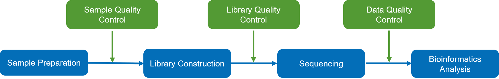
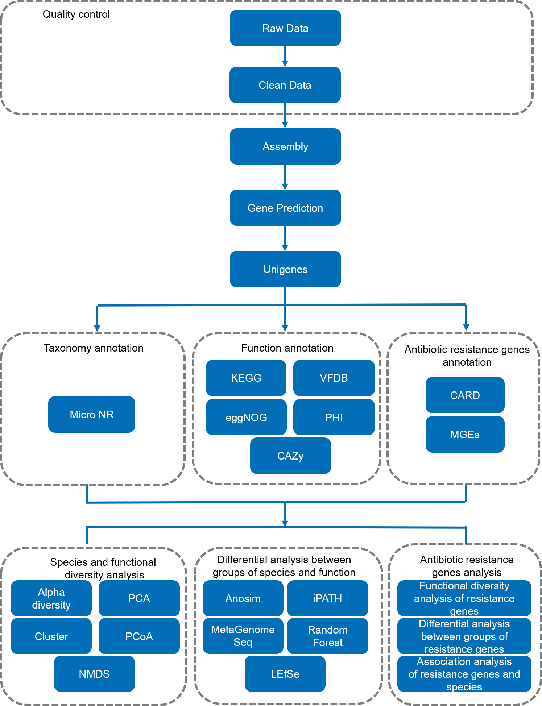
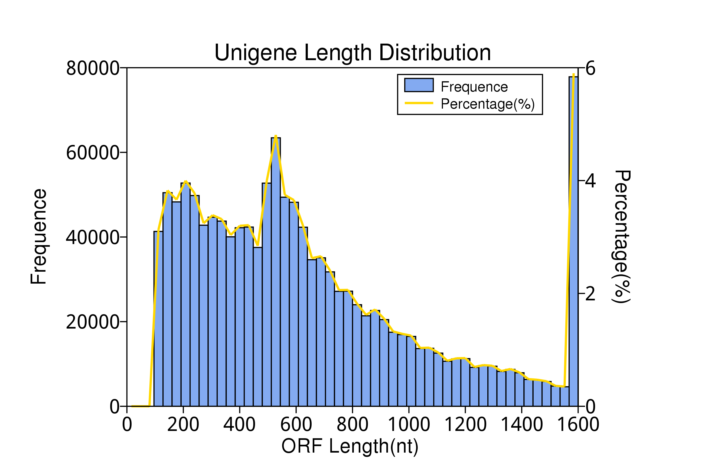
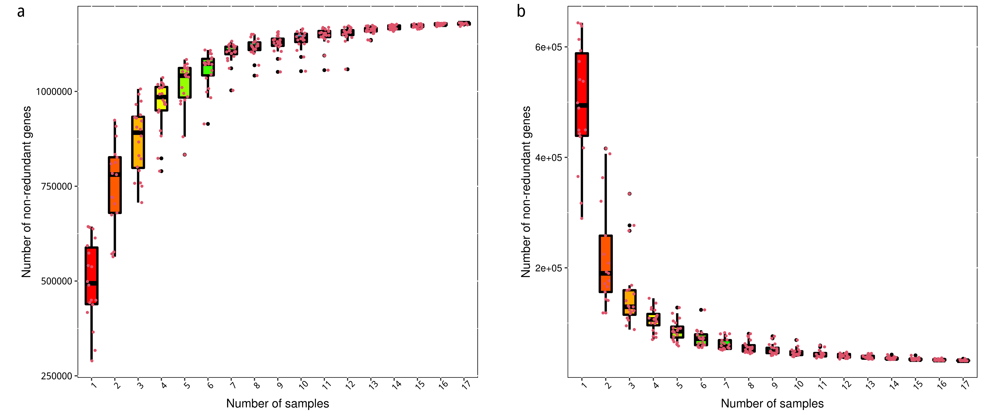
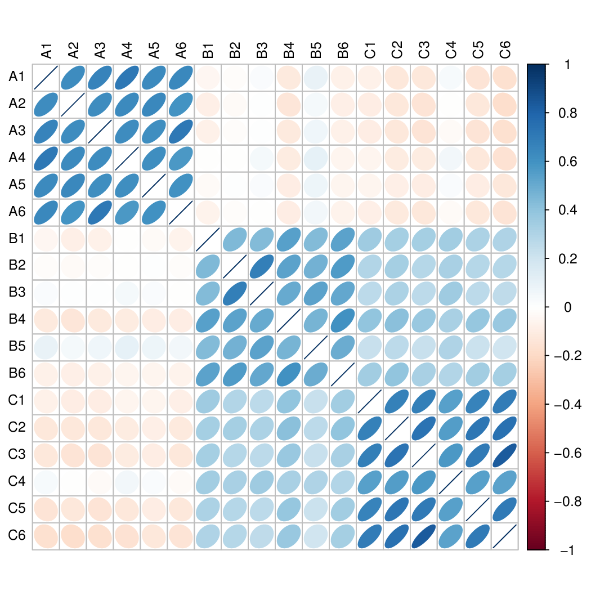
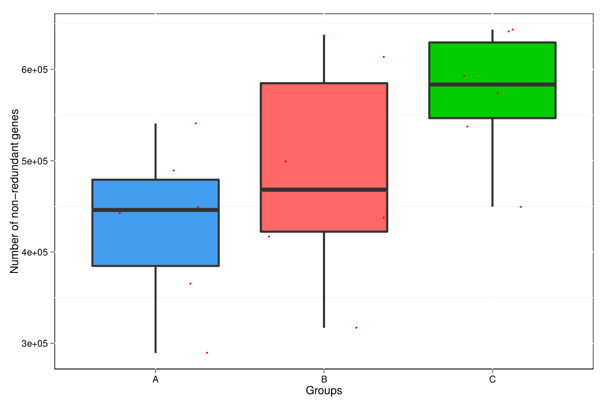
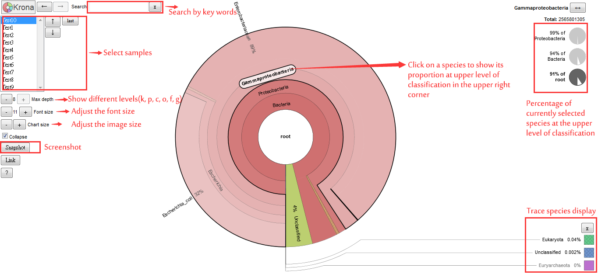
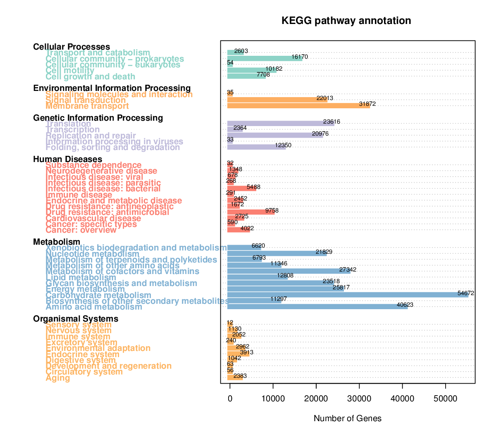
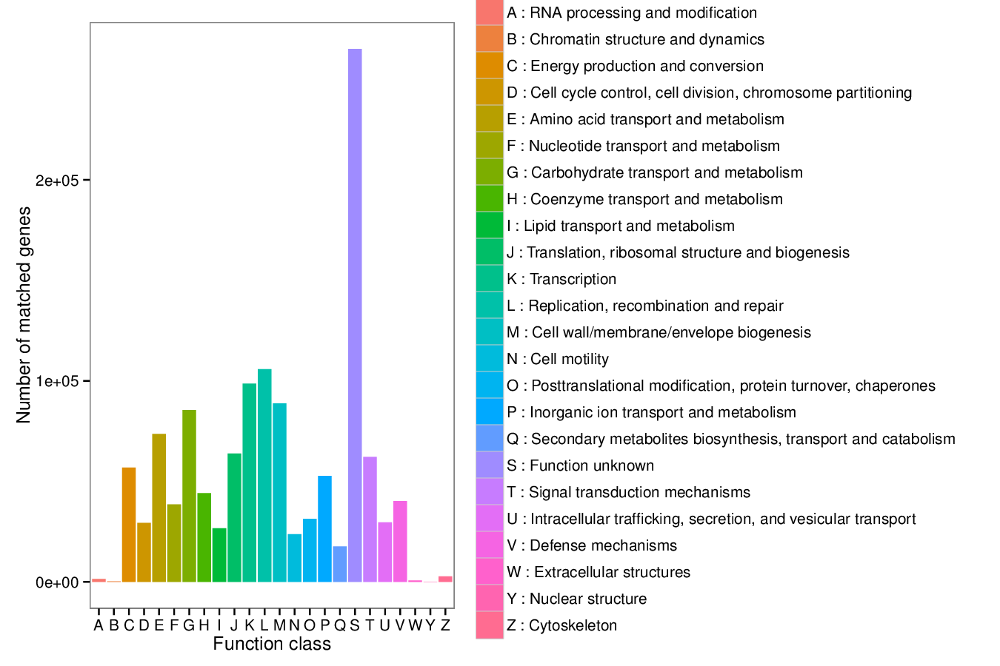
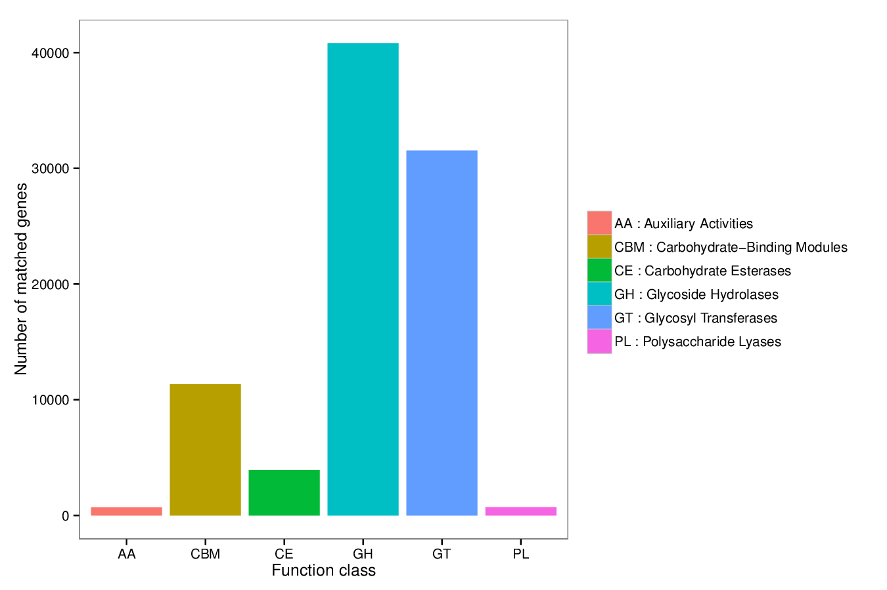

Shotgun metagenomic short read report
| Contract ID | HXXXXXXXX |
| Contract Name | XXXXXXXXXXXXXXXXXXXXXXXX |
| Batch ID | X101SCXXXXXXXX-XXX-XXXX |
| Report Time | 2024-10-30 |
| Tel | 400-658-1585 |
| service-meta@novogene.com | |
1 Introduction
Diverse communities of microbes thrive in environments ranging from the human gut (Walter et al., 2011), to the mud in deep sea, to conventionally inhospitable habitats such as acid mine runoff and geothermal hot springs. Environmental DNA sequencing has revealed the expansive biodiversity of microorganisms and clarified the relationship between host-associated microbial communities and host phenotype. Studies of cultured microbes reveal that they are critical components of these environments and provide essential ecosystem services (van der Heijden et al., 2008). Unfortunately, most microbes are notoriously difficult to culture in the laboratory. Therefore, vast amounts of organismal and functional novelty remain to be explored.
Metagenomics, or the study of microbial communities, takes advantage of advances in sequencing technology and analysis methods to comprehensively examine microbial communities directly from their natural habitats, which potentially may reveal novel content (Handelsman et al., 1998). Metagenomic sequencing provides insights into species biodiversity, functions, and pathways present in variant microbiomes.
With the rapid development of sequencing and informatics technologies, metagenomic studies with Next Generation Sequencing (NGS) is a fundamental strategy to study community diversity and their characteristics. Metagenomic sequencing with NGS is also notable for the ability to get tremendous data and abundant information (Tringe et al., 2005; Raes et al., 2007). NGS has been utilized in more and more far-reaching projects, like the Human Microbiome Project (HMP) and Earth Microbiome Project (EMP). The workflow is shown as follows:

Figure 1 Project workflow
2 Library Construction and Sequencing
2.1 Sample Quality Control
Please refer to QC report for methods of sample quality control.
2.2 Library Construction, Quality Control, and Sequencing
The genomic DNA was randomly sheared into shorter fragments. The obtained fragments were then end-repaired, A-tailed, and further ligated with sequencing adapters. The resulting fragments with adapters were size selected and PCR amplified, unless otherwise specified as PCR-free, before proceeding for purification.
The experimental procedures of DNA library preparation are shown in Figure 2.

Figure 2 Workflow of library construction
The library was quantified using Qubit and qPCR, and the size distribution was detected with a fragment analyzer. Quantified libraries were pooled and sequenced according to the effective library concentration and required data amount.
3 Bioinformatics Analysis Pipeline
Data Quality Control: Post-sequencing, a portion of the raw data was identified as low-quality. Through quality control and host filtering, effective (clean) data was obtained to ensure accuracy in subsequent analyses.
Metagenome Assembly: The clean data from each sample, after quality control, was used for metagenome assembly.
Gene Prediction: Using MetaGeneMark, gene prediction was performed on the assembled scaffolds. The predicted genes were pooled and dereplicated to create a gene catalogue, enabling the assessment of gene abundance for each sample.
Taxonomy Annotation: The metagenomic reads were compared with the microNR database for taxonomy annotation, resulting in abundance tables at various taxonomic ranks.
Function Annotation: The functions of coding sequences were inferred by comparing them with databases like KEGG, eggNOG, and CAZy, providing a functional profile of the metagenome.
Statistical and Comparative Analysis: Utilizing the abundance tables, analyses including clustering, Anosim, PCA, PCoA, and NMDS were conducted. For grouped data, MetaGenomeSeq and LEfSe were used for multivariate analysis and pathway comparison.
ARGs Analysis: Antibiotic resistant genes were annotated using the CARD database, revealing their abundance and species distribution.
MGE Analysis: Unigenes were compared against databases for insertion sequences, integrons, and plasmids to determine their abundance.

Figure 3 Analysis Workflow
Notes: When the number of samples is less than 3, PCA, PCoA, NMDS, clustering analysis and abundance heatmap analysis cannot be carried out. When the number of biological repeats in the group is less than 3, statistical analysis such as Anosim, MetaGenomeSeq, and LEfSe are statistically meaningless and the analysis cannot be conducted.
4 Analysis Results
4.1 Sequencing data processing
The protocols of data pre-processing are as follows:
We will discard the paired reads in the following situation: when either one read contains adapter contamination; when either one read contains more than 10 percent uncertain nucleotides; when either one read contains more than 50 percent low quality nucleotides (base quality less than 5).
Table 4.1 QC statistics
| SampleID | Raw_Base(G) | Clean_Base(G) | Clean_Q20(%) | Clean_Q30(%) | Clean_GC(%) | Effective(%) | NonHost_Base(G) |
|---|---|---|---|---|---|---|---|
| A1 | 6.07 | 6.03 | 97.10 | 91.62 | 50.34 | 99.22 | 6.01 |
| A2 | 6.52 | 6.47 | 97.84 | 93.69 | 51.00 | 99.32 | 6.20 |
| A3 | 6.32 | 6.29 | 97.56 | 92.87 | 50.01 | 99.50 | 6.25 |
| A4 | 6.19 | 6.16 | 97.66 | 93.12 | 50.64 | 99.43 | 6.13 |
| A5 | 6.12 | 6.06 | 97.58 | 92.93 | 49.01 | 99.05 | 5.47 |
| A6 | 7.04 | 7.00 | 98.22 | 94.71 | 50.63 | 99.41 | 6.72 |
| B1 | 11.67 | 11.46 | 97.83 | 93.90 | 47.04 | 98.21 | 6.43 |
| B2 | 9.68 | 9.50 | 97.67 | 93.46 | 48.33 | 98.12 | 5.93 |
| B3 | 6.10 | 6.02 | 96.96 | 91.34 | 51.11 | 98.70 | 5.99 |
| B4 | 6.24 | 6.18 | 97.42 | 92.56 | 48.49 | 99.08 | 5.38 |
| B5 | 6.10 | 6.03 | 96.94 | 91.25 | 51.13 | 98.92 | 5.92 |
| B6 | 7.52 | 7.41 | 97.24 | 92.23 | 48.42 | 98.65 | 5.78 |
| C1 | 6.47 | 6.43 | 97.24 | 92.09 | 50.59 | 99.31 | 6.04 |
| C2 | 7.98 | 7.90 | 97.67 | 93.28 | 47.86 | 98.95 | 6.27 |
| C3 | 8.29 | 8.18 | 97.69 | 93.38 | 47.00 | 98.70 | 6.06 |
| C4 | 6.17 | 6.12 | 97.66 | 93.20 | 45.85 | 99.20 | 5.75 |
| C5 | 8.90 | 8.75 | 97.57 | 93.19 | 46.48 | 98.33 | 5.19 |
| C6 | 7.93 | 7.85 | 97.78 | 93.62 | 48.02 | 98.96 | 6.62 |
Show Annotation
Raw_Base(G): Raw sequenced data.
Clean_Base(G): Clean data obtained after data filtering.
Clean_Q20: Percentage of bases with a quality score over 20, indicating an error rate less than 1%.
Clean_Q30: Percentage of bases with a quality score over 30, corresponding to an error rate less than 0.1%.
Clean_GC(%): Calculated as the total count of guanine (G) and cytosine (C) bases divided by the total count of clean bases, expressed as a percentage.
Effective(%): Represents the ratio of Clean Data (post-quality control data) to Raw Data, expressed as a percentage.
NonHost_Base(G): The total count of clean bases remaining after the removal of host-specific sequences, measured in gigabases (G).
Results directory:
QC_result: result/01.QC/QC_summary.xls
4.2 Metagenome Assembly
Samples successfully passing Quality Control (QC) underwent initial assembly using MEGAHIT, configured with the meta-large preset (for more details, see: https://www.metagenomics.wiki/tools/assembly/megahit). Scaftigs from each sample shorter than 500 base pairs (bp) were discard, following methodologies established in previous studies (Qin et al., 2014; Zeller et al., 2014; Sunagawa et al., 2015; Li et al., 2014). The resulting effective scaftigs were then utilized for further analysis and gene prediction.
Table 4.2 Statistics of scaftigs (>=500 bp)
| SampleID | Total len(bp) | Scaftigs num | Average len(bp) | N50 len(bp) | N90 len(bp) | Max len(bp) |
|---|---|---|---|---|---|---|
| A1 | 165,447,841 | 69,857 | 2,368.38 | 10,965 | 708 | 478,642 |
| A2 | 213,570,341 | 111,489 | 1,915.62 | 4,092 | 656 | 646,982 |
| A3 | 235,682,388 | 121,901 | 1,933.39 | 3,883 | 666 | 646,981 |
| A4 | 144,363,110 | 50,624 | 2,851.67 | 15,391 | 785 | 478,624 |
| A5 | 183,960,238 | 86,142 | 2,135.55 | 9,028 | 657 | 412,322 |
| A6 | 249,341,826 | 138,844 | 1,795.84 | 3,263 | 642 | 646,982 |
| B1 | 319,519,425 | 166,683 | 1,916.93 | 3,518 | 672 | 481,015 |
| B2 | 132,072,777 | 89,750 | 1,471.56 | 1,905 | 596 | 818,692 |
| B3 | 121,835,665 | 76,525 | 1,592.10 | 2,583 | 610 | 819,022 |
| B4 | 247,135,836 | 148,448 | 1,664.80 | 2,709 | 626 | 488,277 |
| B5 | 92,541,796 | 54,664 | 1,692.92 | 2,594 | 638 | 819,154 |
| B6 | 185,528,748 | 117,961 | 1,572.80 | 2,107 | 630 | 498,778 |
| C1 | 200,981,089 | 105,572 | 1,903.73 | 4,001 | 648 | 818,507 |
| C2 | 265,057,699 | 148,610 | 1,783.58 | 3,019 | 654 | 460,710 |
| C3 | 309,520,243 | 169,297 | 1,828.27 | 3,159 | 664 | 437,747 |
| C4 | 170,647,887 | 87,284 | 1,955.09 | 4,858 | 655 | 488,694 |
| C5 | 225,060,591 | 140,455 | 1,602.37 | 2,417 | 620 | 646,981 |
| C6 | 317,578,445 | 168,282 | 1,887.18 | 3,369 | 673 | 479,734 |
Show Annotation
Total len(bp): stands for length of all the Scaftigs.
Scaftigs num: stands for the total number of Scaftigs.
Average len(bp): stands for the average length of all the Scaftigs.
N50 len(bp): defined as the shortest sequence length at 50% of the genome.
N90 len(bp): defined as the shortest sequence length at 90% of the genome.
Max len(bp): means the max length of Scaftigs.
Results directory:
Scaffold statistics table: result/02.Assembly/total.scafSeq.stat.info.xls
Scaftigs with length longer than 500 bp: result/02.Assembly/total.scaftigs.stat.info.xls
Assembly results for all samples: result/02.Assembly/Sample_Name
Length distribution of scaftigs: result/02.Assembly/Sample_Name/*.{svg,png}
4.3 Gene Prediction and Abundance Analysis
4.3.1 Introduction of gene prediction and abundance analysis
Scaftigs measuring 500 base pairs (bp) or more were selected for Open Reading Frame (ORF) prediction using MetaGeneMark, a method validated in several studies (Zhu et al., 2010; Karlsson et al., 2012; Karlsson et al., 2013; Oh et al., 2014). ORFs smaller than 100 nucleotide acids were excluded (Qin et al., 2010).
These ORFs underwent dereplication using CD-HIT (Li et al., 2006; Fu et al., 2012) to create non-redundant gene catalogues, with a focus on continuous gene sequences encoding nucleic acids (Sunagawa et al., 2015). The dereplication settings were: identity at 95% and coverage at 90%, selecting the longest sequence as the representative gene (unigene)(Li et al., 2014; Zeller et al., 2014).
Clean data were then mapped to the gene catalogue using Bowtie2 to quantify gene abundance. This abundance was calculated based on the number of mapped reads and gene length, using a computational formula referenced in multiple studies (Karlsson et al., 2012; Cotillard et al., 2013; Le Chatelier et al., 2013; Oh et al., 2014; Zeller et al., 2014; Villar et al., 2015). Subsequent analyses were based on these gene catalogue abundance.
Note: r stands for number of mapping reads. L stands for the length of gene.
Downstream analyses were performed based on the abundance of gene catalogues.
4.3.2 Gene catalogue statistics
Table 4.3 The Statistic of gene catalogues
| ORFs_NO. | 1,319,089 |
|---|---|
| Integrity_start | 293,325(22.24%) |
| Integrity_end | 251,360(19.06%) |
| Integrity_none | 127,814(9.69%) |
| Integrity_all | 646,590(49.02%) |
| Total_Len.(Mbp) | 897.37 |
| Average_Len.(bp) | 680.3 |
| GC_Percent | 50.60 |
Show Annotation
ORFs_NO.: number of genes in gene catalogue.
Integrity_start: amount and percentage of genes only containing start codon.
Integrity_end: amount and percentage of genes only containing stop codon.
Integrity_none: amount and percentage of genes not containing start or stop codon.
Integrity_all: amount and percentage of genes containing both start and stop codon.
Total_Len. (Mbp): the total length of gene catalogue (million).
Average_Len. (bp): the average length of genes in gene catalogue.
GC_Percent: the percentage of GC content of genes in gene catalogue.

Figure 4.1 ORFs length distribution
Results directory:
Gene catalogue length distribution: result/03.GenePredict/GenePredict/UniGenes/*.{svg,png}
4.3.3 Core-pan genome analysis
Based on the gene abundance table, rarefaction curves were plotted with the number of core-genes and pan-genes separately by randomly drawing sampling. The figures were shown as follows:

Figure 4.2 Core-pan gene rarefaction curve
Notes: a) Pan genome rarefaction curve. b) Core genome rarefaction curve. In the figure, X-axis means the number of samples that sampled. In the figure, Y-axis means the gene number.
Results directory:
Rarefaction curve: result/03.GenePredict/GeneStat/core_pan/*.{png,pdf}
4.3.4 Correlation analysis of samples
The spearman's correlation coefficient between samples is a critical index which reflects the reliability of experiment and the reasonability of the chosen samples.

Figure 4.3 Correlation between samples
Notes: Blue bubbles mean positive correlation. Red bubbles mean negative correlation. The darker the color, the greater the association.
Results directory:
Correlation matrix for the relation: result/03.GenePredict/GeneStat/correlation/*.{png,pdf}
4.3.5 Gene number analysis
To investigate the difference of gene number among groups, the gene numbers of different groups were shown as follows in a box chart:

Figure 4.4 Gene number of different groups
Notes: X-axis indicates the group information; Y-axis indicates the gene number.
Results directory:
Gene number of different groups figures: result/03.GenePredict/GeneStat/genebox_group1/*.{png,pdf}
4.4 Taxonomy and Function Annotation
4.4.1 Analysis of species composition
NR database (https://www.ncbi.nlm.nih.gov/): a non-redundant protein amino acid sequence database containing non-redundant data from SwissProt, PIR (Protein Information Resource), PRF (Protein Research Foundation), PDB (Protein Data Bank) protein databases as well as protein data translated from GenBank and RefSeq CDS data.
Micro_NR database: Microbial sequences of bacteria, fungi, archaea and viruses extracted from the NR database were used for microbiological analyses.
4.4.1.1 Introduction of Taxonomic Annotation
Taxonomic diversity serves as a way of profiling a community and can be used to ascertain the similarity of two or more communities. This part involves identifying those reads that are marker gene homologs to a database of taxonomically informative gene families, using sequence or phylogenetic similarity to the database sequences (Micro_NR database) (Buchfink B et al., 2015) to taxonomically annotate each metagenomic homolog (MEGAN) (Huson DH et al., 2011).
4.4.1.2 Krona presentation
Krona allows hierarchical data to be explored with zoomable pie charts, and aims to answer questions regarding the relative abundance of taxa across multiple levels of the hierarchy simultaneously (Ondov et al., 2011). The software supplements existing metagenomic visualizations by creating clearer depictions of abundance estimates and by enabling in-depth understanding of the underlying classifications. An example picture was as follows:

Figure 4.5 Taxonomy annotation visualization
To view full size picture please click here
Notes: circles from inside to outside stand for different taxa, and the area of sector means respective proportion of different taxa. Please refer to the description on the webpage (see details: https://github.com/marbl/Krona/wiki/).
Based on the abundance table of each taxonomic level, the top 10 taxa were picked out and the other taxa were set as "Others". Bar charts show the relative taxonomy abundance of each sample in different taxonomic level.
Figure 4.6 Relative taxonomy abundance of each sample in different taxonomic level
Results directory:
Taxonomy annotation visualization: result/04.TaxAnnotation/MicroNR/Krona/taxonomy.krona.html
Top 10 species analysis: result/04.Annotation/MicroNR/{Top_sample,Top_group1}, including Kindom, Phylum, Class, Order, Family, Genus, and Species
4.4.1.3 Taxonomic abundance heatmap
The abundance distribution of dominant 35 genera of all samples was displayed in the species abundance heatmap.
Figure 4.7 Abundance clustering heatmap in genus level
Notes: X-axis indicates sample name. Y-axis indicates taxonomic information. The clustering tree is at the left side of this chart. The absolute value of "Z" represents the distance between the raw score and the population mean in units of the standard deviation. "Z" is negative when the raw score is less than the mean value, positive when more.
Figure 4.8 Gene number clustering heatmap in genus level
Notes: X-axis indicates sample name. Y-axis indicates taxonomic information. Different colors represent different unigene number.
Results directory:
Heatmap of Relative abundance: result/04.Annotation/MicroNR/Heatmap_sample/, including Kingdom, Phylum, Class, Order, Family, Genus, and Species
Unigenes annotation heatmap: result/04.TaxAnnotation/MicroNR/Heatmap_genenums_sample/, including Kingdom, Phylum, Class, Order, Family, Genus, and Species
4.4.2 KEGG function annotation
Kyoto Encyclopedia of Genes and Genomes (KEGG).
KEGG is an integrated database resource consisting of eighteen databases (including computationally generated SSDB), in which KEGG PATHWAY and KEGG ORTHOLOGY (KO) are the core databases. The KO database is a database of molecular functions represented in terms of functional orthologs. KEGG PATHWAY is a reference database for Pathway Mapping and each pathway can be divided into three levels. Besides, KEGG ENZYME (ec) is also used in function annotation.
4.4.2.1 Basic annotation methods of KEGG
Comparison of Unigenes to functional databases using DIAMOND software (blastp, eval <= 1e-5).
Result filtering: For each sequence, the result with the highest score (one HSP > 60 bits) is selected for subsequent analysis.
From the comparison results, the relative abundance of different functional tiers (the relative abundance of each functional tier is equal to the sum of the relative abundance of the genes annotated to that functional tier) was counted.
From the results of the functional annotation and the gene abundance table, a table of the number of genes in each sample at each taxonomic level was obtained, and for a given function the number of genes in a given sample was equal to the number of genes whose abundance was not 0 among the genes annotated for that function.
4.4.2.2 Functional abundance of KEGG
Based on Unique genes annotation results, cartogram of annotated gene number of KEGG database was drawn. The results were showed as follows:level1, level2, level3, KO, ec, module.

Figure 4.9 Summarized chart for the gene number annotated by KEGG database (Level 1)
Result Directory:
Bar plot for annotation results of KEGG database: result/04.Annotation/KEGG/KEGG_Anno/KEGG.unigenes.num.{pdf,png}
4.4.2.3 Relative abundance of KEGG
According to the relative abundance in level 1 of KEGG database, cartogram of the functional abundance of each sample was drawn.
Figure 4.10 Relative abundance of KEGG
Result Directory:
Bar plots: result/04.Annotation/KEGG/Top_{sample,group1}/*/*.top10.{svg,png}
4.4.2.4 Relative abundance cluster analysis of KEGG
Based on the functional annotations and abundance information of all the samples in the KEGG database, the top 35 functions in terms of abundance and their abundance information in each sample were selected to draw a heat map and clustered at the level of functional differences.

Figure 4.11 Abundance clustering heatmap of KEGG
Result Directory:
KEGG cluster heatmap:result/04.Annotation/KEGG/Heatmap_sample/*/heatmap.sample.*.{pdf,png}
4.4.3 eggNOG function annotation
Evolutionary genealogy of genes: Non-supervised Orthologous Groups (eggNOG).
EggNOG, the database of orthologous groups and functional annotation, can be divided into 24 categories in the first level, and each category is represented by a capital letter.
4.4.3.1 Basic annotation methods of eggNOG
Comparison of Unigenes to functional databases using DIAMOND software (blastp, eval <= 1e-5).
Result filtering: For each sequence, the result with the highest score (one HSP > 60 bits) is selected for subsequent analysis.
From the comparison results, the relative abundance of different functional tiers (the relative abundance of each functional tier is equal to the sum of the relative abundance of the genes annotated to that functional tier) was counted.
From the results of the functional annotation and the gene abundance table, a table of the number of genes in each sample at each taxonomic level was obtained, and for a given function the number of genes in a given sample was equal to the number of genes whose abundance was not 0 among the genes annotated for that function.
4.4.3.2 Functional abundance of eggNOG
Based on Unique genes annotation results, cartogram of annotated gene number of eggNOG database was drawn. The results were showed as follows:level1, level2, og.

Figure 4.12 Summarized chart for the gene number annotated by eggNOG database (Level 1)
Result Directory:
Bar plot for annotation results of eggNOG database: result/04.Annotation/eggNOG/eggNOG_Anno/eggNOG.unigenes.num.{pdf,png}
4.4.3.3 Relative abundance of eggNOG
According to the relative abundance in level 1 of eggNOG database, cartogram of the functional abundance of each sample was drawn.
Figure 4.13 Relative abundance of eggNOG
Result Directory:
Bar plots: result/04.Annotation/eggNOG/Top_{sample,group1}/*/*.top10.{svg,png}
4.4.3.4 Relative abundance cluster analysis of eggNOG
Based on the functional annotations and abundance information of all the samples in the eggNOG database, the top 35 functions in terms of abundance and their abundance information in each sample were selected to draw a heat map and clustered at the level of functional differences.

Figure 4.14 Abundance clustering heatmap of eggNOG
Result Directory:
eggNOG cluster heatmap:result/04.Annotation/eggNOG/Heatmap_sample/*/heatmap.sample.*.{pdf,png}
4.4.4 CAZy function annotation
CAZy is a database dedicated to the display and analysis of genomic, structural and biochemical information on Carbohydrate-Active Enzymes. The database mainly contains six functional classes in the first level: Glycoside Hydrolase, GlycosylTransferase, Polysaccharide Lyase, Carbohydrate Esterases, Auxiliary Activities and Carbohydrate-Binding Modules.
4.4.4.1 Basic annotation methods
Comparison of Unigenes to functional databases using DIAMOND software (blastp, eval <= 1e-5).
Result filtering: For each sequence, the result with the highest score (one HSP > 60 bits) is selected for subsequent analysis.
From the comparison results, the relative abundance of different functional tiers (the relative abundance of each functional tier is equal to the sum of the relative abundance of the genes annotated to that functional tier) was counted.
From the results of the functional annotation and the gene abundance table, a table of the number of genes in each sample at each taxonomic level was obtained, and for a given function the number of genes in a given sample was equal to the number of genes whose abundance was not 0 among the genes annotated for that function.
4.4.4.2 Functional abundance of CAZy
Based on Unique genes annotation results, cartogram of annotated gene number of CAZy database was drawn. The results were showed as follows:level1, level2, ec

Figure 4.15 Summarized chart for the gene number annotated by CAZy database (Level 1)
Result Directory:
Bar plot for annotation results of CAZy database: result/04.Annotation/CAZy/Anno/CAZy.unigenes.num.{pdf,png}
4.4.4.3 Relative abundance of CAZy
According to the relative abundance in level 1 of CAZy database, cartogram of the functional abundance of each sample was drawn.
Figure 4.16 Relative abundance of CAZy
Result Directory:
Bar plots at level 1: result/04.Annotation/CAZy/Top_{sample,group1}/level1/level1.top10.{svg,png}
4.4.4.4 Relative abundance cluster analysis of CAZy
Based on the functional annotations and abundance information of all the samples in the CAZy database, the top 35 functions in terms of abundance and their abundance information in each sample were selected to draw a heat map and clustered at the level of functional differences.
Figure 4.17 Abundance clustering heatmap of CAZy
Result Directory:
CAZy cluster heatmap:result/04.Annotation/CAZy/Heatmap_sample/*/heatmap.sample.*.{pdf,png}
4.4.5 VFDB function annotation
VFDB database, or Virulence Factors of Pathogenic Bacteria database, is a database of virulence factors from pathogenic bacteria, chlamydia and mycoplasma. This database not only contains species information with general characterization of virulence genes, but also provides detailed description of virulence gene functions and pathogenic mechanisms. It contains 26 species with 469 virulence factors, 24 virulence islands, and 2,505 genes related to virulence factors.
4.4.5.1 Basic annotation methods of VFDB
Comparison of Unigenes to functional databases using DIAMOND software (blastp, eval <= 1e-5).
Result filtering: For each sequence, the result with the highest score (one HSP > 60 bits) is selected for subsequent analysis.
From the comparison results, the relative abundance of different functional tiers (the relative abundance of each functional tier is equal to the sum of the relative abundance of the genes annotated to that functional tier) was counted, in which the VFDB database was divided into 2 tiers.
From the results of the functional annotation and the gene abundance table, a table of the number of genes in each sample at each taxonomic level was obtained, and for a given function the number of genes in a given sample was equal to the number of genes whose abundance was not 0 among the genes annotated for that function.
Bar plot for annotation results of VFDB database: result/04.Annotation/VFDB/Anno/VFDB.unigenes.num.{pdf,png}
4.4.5.2 Relative abundance of VFDB
According to the relative abundance in level 1 of VFDB database, cartogram of the functional abundance of each sample was drawn.

Figure 4.18 Relative abundance of VFDB
Result Directory:
Bar plots at level 1: result/04.Annotation/VFDB/Top_{sample,group1}/level1/level1.top10.{svg,png}
4.4.5.3 Relative abundance cluster analysis of VFDB
Based on the functional annotations and abundance information of all the samples in the VFDB database, the top 35 functions in terms of abundance and their abundance information in each sample were selected to draw a heat map and clustered at the level of functional differences.
Figure 4.19 Abundance clustering heatmap of VFDB
Result Directory:
VFDB cluster heatmap:result/04.Annotation/VFDB/Heatmap_sample/*/heatmap.sample.*.{pdf,png}
4.4.6 PHI function annotation
PHI database, or Pathogen-Host Interaction database, is a database focused on pathogen-host interactions. It collects, organizes and provides information on the interactions between various pathogens (e.g., bacteria, viruses, fungi, and parasites) and their hosts, including humans and other plants and animals.
4.4.6.1 Basic annotation methods of PHI
Comparison of Unigenes to functional databases using DIAMOND software (blastp, eval <= 1e-5).
Result filtering: For each sequence, the result with the highest score (one HSP > 60 bits) is selected for subsequent analysis.
From the comparison results, the relative abundance of different functional tiers (the relative abundance of each functional tier is equal to the sum of the relative abundance of the genes annotated to that functional tier) was counted, in which the PHI database was divided into 3 tiers.
From the results of the functional annotation and the gene abundance table, a table of the number of genes in each sample at each taxonomic level was obtained, and for a given function the number of genes in a given sample was equal to the number of genes whose abundance was not 0 among the genes annotated for that function.
4.4.6.2 Relative abundance of PHI
According to the relative abundance in level 1 of PHI database, cartogram of the functional abundance of each sample was drawn.
Figure 4.20 Relative abundance of PHI
Result Directory:
Bar plots at level 1: result/04.Annotation/PHI/Top_{sample,group1}/level1/level1.top10.{svg,png}
4.4.6.3 Relative abundance cluster analysis of PHI
Based on the functional annotations and abundance information of all the samples in the PHI database, the top 35 functions in terms of abundance and their abundance information in each sample were selected to draw a heat map and clustered at the level of functional differences.
Figure 4.21 Abundance clustering heatmap of PHI
Result Directory:
PHI cluster heatmap:result/04.Annotation/PHI/Heatmap_sample/*/heatmap.sample.*.{pdf,png}
4.5 Taxonomy and Function Diversity
4.5.1 Alpha Diversity Analysis
4.5.1.1 Micro_NR
Starting from the annotated Absolute table of taxonomic level, calculate the richness and diversity of each sample (or group).The table illustrates an example with only species level.
Table 4.4 Statistical Results of Alpha Diversity Analysis
| Sample | ACE | chao1 | shannon | simpson | observed_species | goods_coverage |
|---|---|---|---|---|---|---|
| A1 | 4153.16211857023 | 4192.97540983607 | 4.23652508774237 | 0.958209284387269 | 3989 | 1 |
| A2 | 4602.73575329709 | 4635.43961352657 | 4.50987271592601 | 0.959378874314839 | 4469 | 1 |
| A3 | 4788.9436452936 | 4853.04918032787 | 4.64437045044106 | 0.969292478414934 | 4659 | 1 |
| A4 | 3423.94758375198 | 3485.5303030303 | 3.96051157512467 | 0.940471347191081 | 3268 | 1 |
| A5 | 4632.57530473899 | 4642.5 | 4.56171871530976 | 0.967498440202328 | 4521 | 1 |
| A6 | 4918.94735285027 | 4962.80597014925 | 4.44206779235049 | 0.951241490383073 | 4794 | 1 |
| B1 | 5518.4225119167 | 5563.82258064516 | 4.50076093446646 | 0.935731650056453 | 5416 | 1 |
| B2 | 4764.9617400887 | 4805.17374517375 | 2.65115165076833 | 0.68023414806216 | 4625 | 1 |
| B3 | 4784.89214043213 | 4829.84435797665 | 2.90484187183182 | 0.77064545616734 | 4630 | 1 |
| B4 | 5544.13245194484 | 5570.5 | 4.39565960090137 | 0.951783196735385 | 5469 | 1 |
| B5 | 4196.11300437445 | 4298.1013215859 | 2.1159518202566 | 0.609310388100981 | 3999 | 1 |
| B6 | 5043.2503030825 | 5090.16901408451 | 3.48569723474056 | 0.838059772573625 | 4912 | 1 |
| C1 | 5168.35162106894 | 5190.424 | 4.49203323759425 | 0.96721798846755 | 5043 | 1 |
| C2 | 5270.91753977194 | 5308.20873786408 | 4.4582227679025 | 0.960715860494338 | 5151 | 1 |
| C3 | 5576.1807877487 | 5606.85534591195 | 4.73414115765239 | 0.972438698767873 | 5510 | 1 |
| C4 | 4851.77395793166 | 4884.05882352941 | 3.73204558562936 | 0.921457130317677 | 4714 | 1 |
| C5 | 5317.7939557869 | 5331.68181818182 | 4.6063846836177 | 0.968427081913359 | 5241 | 1 |
| C6 | 5614.77681166886 | 5663.54022988506 | 4.7139141440765 | 0.972334502038189 | 5520 | 1 |
Show Annotation
(1) ACE: Estimated number of species in the community.
(2) chao1: The total number of species contained in the community samples was estimated.
(3) shannon: The total number of taxa in the samples and their percentage. The higher the community diversity and the more evenly distributed the species, the greater the shannon index.
(4) simpson: characterizes the diversity and evenness of species distribution within a community.
(5) observed_species: Number of directly observed species.
(6) goods_coverage: Sequencing depth index coverage, the higher the sequencing coverage, the larger the index.
Results directory:
Micro_NR Alpha Diversity indices statistics: result/05.Diversity/MicroNR/AlphaDiversity/Alpha_index_table/tax_Alphaindex.*.xls
4.5.1.2 KEGG
Starting from the annotated Absolute table of KEGG, calculate the richness and diversity of each sample (or group).The table illustrates an example with only level3.
Table 4.5 Statistical Results of Alpha Diversity Analysis
| Sample | ACE | chao1 | shannon | simpson | observed_species | goods_coverage |
|---|---|---|---|---|---|---|
| A1 | 273.707444598338 | 273 | 4.77411934855941 | 0.987928684299046 | 272 | 1 |
| A2 | 285 | 285 | 4.76457945770708 | 0.987648971413218 | 285 | 1 |
| A3 | 270 | 270 | 4.77166244174991 | 0.987768810460186 | 270 | 1 |
| A4 | 269 | 269 | 4.76710073185288 | 0.987827943762566 | 269 | 1 |
| A5 | 286.622402962375 | 285.5 | 4.77100544765721 | 0.987880727814654 | 283 | 1 |
| A6 | 283.714825816905 | 285.5 | 4.75105915789526 | 0.98720532799813 | 278 | 1 |
| B1 | 303.147321428571 | 303 | 4.72245567149193 | 0.98655069095923 | 303 | 1 |
| B2 | 305.441840277778 | 312 | 4.63637994828289 | 0.984859130862253 | 302 | 1 |
| B3 | 287 | 287 | 4.63189666241211 | 0.984668674272447 | 287 | 1 |
| B4 | 306.306818181818 | 304.333333333333 | 4.65682146718501 | 0.984927662405129 | 301 | 1 |
| B5 | 295.360248447205 | 295.5 | 4.60057688981784 | 0.984162491412753 | 295 | 1 |
| B6 | 297 | 297 | 4.66394302418658 | 0.985165454799683 | 297 | 1 |
| C1 | 415.929402573907 | 415.333333333333 | 4.67284280123368 | 0.985395128698675 | 415 | 1 |
| C2 | 415.53825 | 415 | 4.67590954874842 | 0.985014290363385 | 415 | 1 |
| C3 | 415 | 415 | 4.761726454503 | 0.985823169202734 | 415 | 1 |
| C4 | 412 | 412 | 4.68908642661952 | 0.984705702675436 | 412 | 1 |
| C5 | 414.302900128103 | 414 | 4.67650949443659 | 0.98521938619125 | 414 | 1 |
| C6 | 416 | 416 | 4.71185254502252 | 0.98526606576296 | 416 | 1 |
Show Annotation
(1) ACE: Estimated number of species in the community.
(2) chao1: The total number of species contained in the community samples was estimated.
(3) shannon: The total number of taxa in the samples and their percentage.The higher the community diversity and the more evenly distributed the species, the greater the shannon index.
(4) simpson: characterizes the diversity and evenness of species distribution within a community.
(5) observed_species: Number of directly observed species.
(6) goods_coverage: Sequencing depth index coverage, the higher the sequencing coverage, the larger the index.
Results directory:
KEGG Alpha Diversity indices statistics: result/05.Diversity/KEGG/AlphaDiversity/Alpha_index_table/KEGG_Alphaindex.*.xls
4.5.1.3 eggNOG
Starting from the annotated Absolute table of eggNOG, calculate the richness and diversity of each sample (or group).The table illustrates an example with only og.
Table 4.6 Statistical Results of Alpha Diversity Analysis
| Sample | ACE | chao1 | shannon | simpson | observed_species | goods_coverage |
|---|---|---|---|---|---|---|
| A1 | 152504.599479114 | 153133.947639359 | 10.0308450107352 | 0.999855253951031 | 149285 | 1 |
| A2 | 162663.085761941 | 163204.680626546 | 10.2334392392994 | 0.999876439458422 | 159904 | 1 |
| A3 | 169126.640172966 | 170039.179750711 | 10.3798407715437 | 0.999881247443049 | 166868 | 1 |
| A4 | 132799.509769068 | 133354.936900056 | 9.81051100719566 | 0.999829571396549 | 129080 | 1 |
| A5 | 163229.388556906 | 163546.916968647 | 10.1513746017508 | 0.999861500677522 | 160807 | 1 |
| A6 | 174509.249480247 | 175136.448888889 | 10.4439069602209 | 0.99988742958355 | 172227 | 1 |
| B1 | 216442.692036418 | 217381.022929936 | 10.6687509218202 | 0.99989923521811 | 214258 | 1 |
| B2 | 188301.105426006 | 189445.893065693 | 9.97157599261154 | 0.999834118948884 | 184526 | 1 |
| B3 | 186280.372550211 | 187579.126540881 | 10.1160966387582 | 0.999861134540014 | 182517 | 1 |
| B4 | 211885.200124527 | 212416.459049545 | 10.5720278220846 | 0.999890405077804 | 209938 | 1 |
| B5 | 167895.847107994 | 169689.026962539 | 9.73775863769876 | 0.999810109884451 | 162519 | 1 |
| B6 | 198189.338070971 | 199220.965997468 | 10.3916857730234 | 0.999882522163175 | 195954 | 1 |
| C1 | 207489.893751353 | 208037.286532422 | 10.4787461728404 | 0.999896225564693 | 202754 | 1 |
| C2 | 216463.903421993 | 217943.891014691 | 10.4786726680676 | 0.999888625691143 | 214092 | 1 |
| C3 | 221932.523445026 | 222731.370864886 | 10.6369735109214 | 0.999890338389475 | 219781 | 1 |
| C4 | 207213.636732081 | 207630.462481275 | 10.219197904323 | 0.999880367165942 | 204181 | 1 |
| C5 | 210383.156206416 | 210910.465192021 | 10.5243461558896 | 0.999889771877566 | 208377 | 1 |
| C6 | 220135.56193467 | 221209.377305463 | 10.5607272186908 | 0.999881922546549 | 217390 | 1 |
Show Annotation
(1) ACE: Estimated number of species in the community.
(2) chao1: The total number of species contained in the community samples was estimated.
(3) shannon: The total number of taxa in the samples and their percentage.The higher the community diversity and the more evenly distributed the species, the greater the shannon index.
(4) simpson: characterizes the diversity and evenness of species distribution within a community.
(5) observed_species: Number of directly observed species.
(6) goods_coverage: Sequencing depth index coverage, the higher the sequencing coverage, the larger the index.
Results directory:
eggNOG Alpha Diversity indices statistics: result/05.Diversity/eggNOG/AlphaDiversity/Alpha_index_table/eggNOG_Alphaindex.*.xls
4.5.1.4 CAZy
Starting from the annotated Absolute table of CAZy, calculate the richness and diversity of each sample (or group).The table illustrates an example with only level2.
Table 4.7 Statistical Results of Alpha Diversity Analysis
| Sample | ACE | chao1 | shannon | simpson | observed_species | goods_coverage |
|---|---|---|---|---|---|---|
| A1 | 315.312536254797 | 314.6 | 4.22572314998574 | 0.964337753356556 | 314 | 1 |
| A2 | 318.214953271028 | 318 | 4.2356347474775 | 0.96510466630556 | 318 | 1 |
| A3 | 326.336526077098 | 326 | 4.21433113268013 | 0.964255266260201 | 326 | 1 |
| A4 | 304.545796308954 | 304.125 | 4.21598324541129 | 0.965094789977119 | 304 | 1 |
| A5 | 323.943910989179 | 323.5 | 4.25715557512568 | 0.96563683295147 | 322 | 1 |
| A6 | 328.075435519603 | 327.6 | 4.21043990155504 | 0.963683989142133 | 327 | 1 |
| B1 | 331.376680391569 | 330.5 | 4.1759323901759 | 0.961842108822012 | 330 | 1 |
| B2 | 312.680309442895 | 313 | 3.92760303601137 | 0.956142341984569 | 310 | 1 |
| B3 | 316.413154031694 | 315.5 | 4.02230554411756 | 0.95913785458032 | 314 | 1 |
| B4 | 324.754409165509 | 325.5 | 4.08575025422213 | 0.959941700907112 | 324 | 1 |
| B5 | 301.304899930616 | 302.090909090909 | 3.93406985825386 | 0.957900540309229 | 295 | 1 |
| B6 | 314.568775686428 | 314.2 | 3.99236952338246 | 0.957977119677532 | 314 | 1 |
| C1 | 345.295207490014 | 345.142857142857 | 4.04328177272977 | 0.957837136968416 | 343 | 1 |
| C2 | 341.827769557028 | 342 | 4.07812283334349 | 0.95964309287744 | 341 | 1 |
| C3 | 355.328571128285 | 355.75 | 4.10944296584069 | 0.957804510804491 | 352 | 1 |
| C4 | 343.423950089238 | 342.428571428571 | 4.08995668833175 | 0.963238807332684 | 341 | 1 |
| C5 | 341.181461030023 | 341 | 4.06111769030604 | 0.956837981854216 | 341 | 1 |
| C6 | 353.499705739011 | 352.75 | 4.06764003512731 | 0.956146606838414 | 352 | 1 |
Show Annotation
(1) ACE: Estimated number of species in the community.
(2) chao1: The total number of species contained in the community samples was estimated.
(3) shannon: The total number of taxa in the samples and their percentage.The higher the community diversity and the more evenly distributed the species, the greater the shannon index.
(4) simpson: characterizes the diversity and evenness of species distribution within a community.
(5) observed_species: Number of directly observed species.
(6) goods_coverage: Sequencing depth index coverage, the higher the sequencing coverage, the larger the index.
Results directory:
CAZy Alpha Diversity indices statistics: result/05.Diversity/CAZy/AlphaDiversity/Alpha_index_table/CAZy_Alphaindex.*.xls
4.5.1.5 VFDB
Starting from the annotated Absolute table of VFDB, calculate the richness and diversity of each sample (or group).The table illustrates an example with only level2.
Table 4.8 Statistical Results of Alpha Diversity Analysis
| Sample | ACE | chao1 | shannon | simpson | observed_species | goods_coverage |
|---|---|---|---|---|---|---|
| A1 | 388.964525555637 | 388.75 | 4.60681106128574 | 0.98470464011846 | 385 | 1 |
| A2 | 397.24041730913 | 397 | 4.72389561029957 | 0.98644835192534 | 397 | 1 |
| A3 | 403.03142081448 | 403.5 | 4.75642218434215 | 0.986779414541669 | 401 | 1 |
| A4 | 359.65264472372 | 358.105263157895 | 4.50371181939169 | 0.983493528006494 | 357 | 1 |
| A5 | 400.070456412606 | 399.666666666667 | 4.66003241837505 | 0.985297833356714 | 399 | 1 |
| A6 | 428.721668468319 | 427.4 | 4.79496079870919 | 0.987081171202975 | 425 | 1 |
| B1 | 477.46007927133 | 479.111111111111 | 4.8583725112885 | 0.986956227260229 | 473 | 1 |
| B2 | 453.105265940573 | 452.769230769231 | 4.65794775277879 | 0.982700147697841 | 450 | 1 |
| B3 | 439.798688328006 | 439.666666666667 | 4.72728292467256 | 0.984065139323195 | 438 | 1 |
| B4 | 474.228619058982 | 473.75 | 4.90421579051127 | 0.986858924579309 | 473 | 1 |
| B5 | 422.860236418291 | 425.1 | 4.55318367644758 | 0.980740144991998 | 416 | 1 |
| B6 | 462.366228159147 | 464.333333333333 | 4.87039302374642 | 0.986420684981125 | 461 | 1 |
| C1 | 422.015365013354 | 426.375 | 4.7970003134788 | 0.98630623148142 | 415 | 1 |
| C2 | 442.005573189256 | 442.142857142857 | 4.8146976230964 | 0.985876990923083 | 440 | 1 |
| C3 | 438.405496200752 | 442.2 | 4.80690610314774 | 0.986319274165337 | 435 | 1 |
| C4 | 420.532976209875 | 421 | 4.71480188994615 | 0.983807665962192 | 418 | 1 |
| C5 | 415.950879765396 | 419 | 4.8090694266594 | 0.986351806659103 | 414 | 1 |
| C6 | 440.323104610956 | 443.75 | 4.78512278327314 | 0.986134841169294 | 434 | 1 |
Show Annotation
(1) ACE: Estimated number of species in the community.
(2) chao1: The total number of species contained in the community samples was estimated.
(3) shannon: The total number of taxa in the samples and their percentage.The higher the community diversity and the more evenly distributed the species, the greater the shannon index.
(4) simpson: characterizes the diversity and evenness of species distribution within a community.
(5) observed_species: Number of directly observed species.
(6) goods_coverage: Sequencing depth index coverage, the higher the sequencing coverage, the larger the index.
Results directory:
VFDB Alpha Diversity indices statistics: result/05.Diversity/VFDB/AlphaDiversity/Alpha_index_table/VFDB_Alphaindex.*.xls
4.5.1.6 PHI
Starting from the annotated Absolute table of PHI, calculate the richness and diversity of each sample (or group).The table illustrates an example with only level1.
Table 4.9 Statistical Results of Alpha Diversity Analysis
| Sample | ACE | chao1 | shannon | simpson | observed_species | goods_coverage |
|---|---|---|---|---|---|---|
| A1 | 201 | 201 | 4.01759895340563 | 0.968251945852084 | 201 | 1 |
| A2 | 213.217614301625 | 212.75 | 4.0455743772716 | 0.969478833047895 | 212 | 1 |
| A3 | 210 | 210 | 4.06607335419074 | 0.96984182576026 | 210 | 1 |
| A4 | 200.206607729125 | 199.75 | 3.9989296105317 | 0.968881328985398 | 199 | 1 |
| A5 | 212 | 212 | 4.03725953724112 | 0.96873147064498 | 212 | 1 |
| A6 | 214 | 214 | 4.08325482974162 | 0.970873227472076 | 214 | 1 |
| B1 | 217.570881226054 | 216 | 4.08974464276702 | 0.969045577602434 | 215 | 1 |
| B2 | 219.744663846709 | 218.5 | 3.97011291985018 | 0.967050525570614 | 217 | 1 |
| B3 | 220.409962871287 | 222 | 3.96627329603286 | 0.965778952140164 | 217 | 1 |
| B4 | 225.79859541436 | 225.25 | 4.06400505287462 | 0.967360764709619 | 225 | 1 |
| B5 | 204.641517318228 | 205 | 3.91842811777064 | 0.964926787797584 | 204 | 1 |
| B6 | 219.624441848297 | 219.333333333333 | 3.99160103073352 | 0.964622868561648 | 219 | 1 |
| C1 | 236.365472580093 | 235.25 | 4.04084851612471 | 0.967825529822778 | 234 | 1 |
| C2 | 241.801979530165 | 242.5 | 4.03696408799607 | 0.967121068825541 | 241 | 1 |
| C3 | 241.406060606061 | 240.25 | 4.12384770413627 | 0.970215262684218 | 240 | 1 |
| C4 | 238.327971359609 | 238 | 3.94969923613933 | 0.962657889600896 | 238 | 1 |
| C5 | 238.340425531915 | 239 | 4.07136359697583 | 0.968899322601918 | 238 | 1 |
| C6 | 244.066582407443 | 246 | 4.11760993118336 | 0.970468601671707 | 243 | 1 |
Show Annotation
(1) ACE: Estimated number of species in the community.
(2) chao1: The total number of species contained in the community samples was estimated.
(3) shannon: The total number of taxa in the samples and their percentage.The higher the community diversity and the more evenly distributed the species, the greater the shannon index.
(4) simpson: characterizes the diversity and evenness of species distribution within a community.
(5) observed_species: Number of directly observed species.
(6) goods_coverage: Sequencing depth index coverage, the higher the sequencing coverage, the larger the index.
Results directory:
PHI Alpha Diversity indices statistics: result/05.Diversity/PHI/AlphaDiversity/Alpha_index/PHI_Alphaindex.*.xls
4.5.2 Sample clustering with taxonomic and function abundance
Sample clustering analysis based on Bray-Curtis distance can evaluate the similarity of samples. The distance was calculated according to relative taxonomic abundance. And the final results were exhibited by combining the clustering result and relative abundance of different samples in phylum level or function level.
4.5.2.1 Micro_NR

Figure 4.22 Clustering tree based on Bray-Curtis distance in Micro_NR
Note: In the figure, the left side is the structure of the Bray-Curtis distance clustering tree; the right side is the relative abundance distribution of each sample at the taxonomic or functional level.
Results directory:
Clustering tree based on Bray-Curtis distance: result/05.Diversity/MicroNR/ClusterTree_group1
4.5.2.2 KEGG
Figure 4.23 Clustering tree based on Bray-Curtis distance in KEGG
Note: In the figure, the left side is the structure of the Bray-Curtis distance clustering tree; the right side is the relative abundance distribution of each sample at the taxonomic or functional level.
Results directory:
Clustering tree based on Bray-Curtis distance: result/05.Diversity/KEGG/ClusterTree_group1
4.5.2.3 eggNOG
Figure 4.24 Clustering tree based on Bray-Curtis distance in eggNOG
Note: In the figure, the left side is the structure of the Bray-Curtis distance clustering tree; the right side is the relative abundance distribution of each sample at the taxonomic or functional level.
Results directory:
Clustering tree based on Bray-Curtis distance: result/05.Diversity/eggNOG/ClusterTree_group1
4.5.2.4 CAZy

Figure 4.25 Clustering tree based on Bray-Curtis distance in CAZy
Note: In the figure, the left side is the structure of the Bray-Curtis distance clustering tree; the right side is the relative abundance distribution of each sample at the taxonomic or functional level.
Results directory:
Clustering tree based on Bray-Curtis distance: result/05.Diversity/CAZy/ClusterTree_group1
4.5.2.5 VFDB
Figure 4.26 Clustering tree based on Bray-Curtis distance in VFDB
Note: In the figure, the left side is the structure of the Bray-Curtis distance clustering tree; the right side is the relative abundance distribution of each sample at the taxonomic or functional level.
Results directory:
Clustering tree based on Bray-Curtis distance: result/05.Diversity/VFDB/ClusterTree_group1
4.5.2.6 PHI
Figure 4.27 Clustering tree based on Bray-Curtis distance in PHI
Note: In the figure, the left side is the structure of the Bray-Curtis distance clustering tree; the right side is the relative abundance distribution of each sample at the taxonomic or functional level.
Results directory:
Clustering tree based on Bray-Curtis distance: result/05.Diversity/PHI/ClusterTree_group1
4.5.3 PCA Analysis
Principal Component Analysis (PCA) Analysis is a method used for dimension reduction analysis. PCA uses an orthogonal transformation to convert a set of observations of possibly correlated variables into a set of values of linearly uncorrelated variables called principal components. The PCA transformation ensures that the horizontal axis PC1 accounts for the most variation while the vertical axis PC2 accounts for the second most (Avershina et al., 2013). For the samples' community composition, the closer the sample points within the PCA figure indicates more similarity among the samples.
4.5.3.1 Micro_NR

Figure 4.28 PCA analysis in Micro_NR
Notes: PCA: The X-axis is the first principal component; the Y-axis is the second principal component. The percentage is the contribution of the principal components to the sample's variation. Each point in the graph stands for a sample. Samples belonging to the same group are in the same color.
Results directory:
PCA figure with sample name: result/05.Diversity/MicroNR/PCA_group1/*/PCA_lable.{png,pdf}
PCA figure without sample name: result/05.Diversity/MicroNR/PCA_group1/*/PCA.{png,pdf}
Result of principal components: result/05.Diversity/MicroNR/PCA_group1/*/PCA.xls
4.5.3.2 KEGG
Figure 4.29 PCA analysis in KEGG
Notes: PCA: The X-axis is the first principal component; the Y-axis is the second principal component. The percentage is the contribution of the principal components to the sample's variation. Each point in the graph stands for a sample. Samples belonging to the same group are in the same color.
Results directory:
PCA figure with sample name: result/05.Diversity/KEGG/PCA_group1/*/PCA_lable.{png,pdf}
PCA figure without sample name: result/05.Diversity/KEGG/PCA_group1/*/PCA.{png,pdf}
Result of principal components: result/05.Diversity/KEGG/PCA_group1/*/PCA.xls
4.5.3.3 eggNOG
Figure 4.30 PCA analysis in eggNOG
Notes: PCA: The X-axis is the first principal component; the Y-axis is the second principal component. The percentage is the contribution of the principal components to the sample's variation. Each point in the graph stands for a sample. Samples belonging to the same group are in the same color.
Results directory:
PCA figure with sample name: result/05.Diversity/eggNOG/PCA_group1/*/PCA_lable.{png,pdf}
PCA figure without sample name: result/05.Diversity/eggNOG/PCA_group1/*/PCA.{png,pdf}
Result of principal components: result/05.Diversity/eggNOG/PCA_group1/*/PCA.xls
4.5.3.4 CAZy
Figure 4.31 PCA analysis in CAZy
Notes: PCA: The X-axis is the first principal component; the Y-axis is the second principal component. The percentage is the contribution of the principal components to the sample's variation. Each point in the graph stands for a sample. Samples belonging to the same group are in the same color.
Results directory:
PCA figure with sample name: result/05.Diversity/CAZy/PCA_group1/*/PCA_lable.{png,pdf}
PCA figure without sample name: result/05.Diversity/CAZy/PCA_group1/*/PCA.{png,pdf}
Result of principal components: result/05.Diversity/CAZy/PCA_group1/*/PCA.xls
4.5.3.5 VFDB
Figure 4.32 PCA analysis in VFDB
Notes: PCA: The X-axis is the first principal component; the Y-axis is the second principal component. The percentage is the contribution of the principal components to the sample's variation. Each point in the graph stands for a sample. Samples belonging to the same group are in the same color.
Results directory:
PCA figure with sample name: result/05.Diversity/VFDB/PCA_group1/*/PCA_lable.{png,pdf}
PCA figure without sample name: result/05.Diversity/VFDB/PCA_group1/*/PCA.{png,pdf}
Result of principal components: result/05.Diversity/VFDB/PCA_group1/*/PCA.xls
4.5.3.6 PHI
Figure 4.33 PCA analysis in PHI
Notes: PCA: The X-axis is the first principal component; the Y-axis is the second principal component. The percentage is the contribution of the principal components to the sample's variation. Each point in the graph stands for a sample. Samples belonging to the same group are in the same color.
Results directory:
PCA figure with sample name: result/05.Diversity/PHI/PCA_group1/*/PCA_lable.{png,pdf}
PCA figure without sample name: result/05.Diversity/PHI/PCA_group1/*/PCA.{png,pdf}
Result of principal components: result/05.Diversity/PHI/PCA_group1/*/PCA.xls
4.5.4 PCoA Analysis
Principal Coordinate Analysis (PCoA) is an ordination technique which picks up the primary elements and structure from reduced multi-dimensional data series of eigenvalues and eigenvectors. This technique has the advantage over PCA in that each ecological distance can be investigated. Aggregated samples represent higher species composition similarity than those that are further apart. PCoA result based on Bray-Curtis distance are shown below.
4.5.4.1 Micro_NR
Figure 4.34 PCoA analysis in Micro_NR
Notes: PCoA: The X-axis is the first principal coordinate; the Y-axis is the second principal coordinate. The percentage stands for the contribution of the principal coordinate to the variation in samples. Each point in the graph stands for a sample. Samples belonging to the same group are in the same color.
Results directory:
PCoA figure with sample name: result/05.Diversity/MicroNR/PCoA_group1/*/PCoA_lable.{png,pdf}
PCoA figure without sample name: result/05.Diversity/MicroNR/PCoA_group1/*/PCoA.{png,pdf}
Result of principal components: result/05.Diversity/MicroNR/PCoA_group1/*/PCoA.xls
4.5.4.2 KEGG
Figure 4.35 PCoA analysis in KEGG
Notes: PCoA: The X-axis is the first principal coordinate; the Y-axis is the second principal coordinate. The percentage stands for the contribution of the principal coordinate to the variation in samples. Each point in the graph stands for a sample. Samples belonging to the same group are in the same color.
Results directory:
PCoA figure with sample name: result/05.Diversity/KEGG/PCoA_group1/*/PCoA_lable.{png,pdf}
PCoA figure without sample name: result/05.Diversity/KEGG/PCoA_group1/*/PCoA.{png,pdf}
Result of principal components: result/05.Diversity/KEGG/PCoA_group1/*/PCoA.xls
4.5.4.3 eggNOG
Figure 4.36 PCoA analysis in eggNOG
Notes: PCoA: The X-axis is the first principal coordinate; the Y-axis is the second principal coordinate. The percentage stands for the contribution of the principal coordinate to the variation in samples. Each point in the graph stands for a sample. Samples belonging to the same group are in the same color.
Results directory:
PCoA figure with sample name: result/05.Diversity/eggNOG/PCoA_group1/*/PCoA_lable.{png,pdf}
PCoA figure without sample name: result/05.Diversity/eggNOG/PCoA_group1/*/PCoA.{png,pdf}
Result of principal components: result/05.Diversity/eggNOG/PCoA_group1/*/PCoA.xls
4.5.4.4 CAZy
Figure 4.37 PCoA analysis in CAZy
Notes: PCoA: The X-axis is the first principal coordinate; the Y-axis is the second principal coordinate. The percentage stands for the contribution of the principal coordinate to the variation in samples. Each point in the graph stands for a sample. Samples belonging to the same group are in the same color.
Results directory:
PCoA figure with sample name: result/05.Diversity/CAZy/PCoA_group1/*/PCoA_lable.{png,pdf}
PCoA figure without sample name: result/05.Diversity/CAZy/PCoA_group1/*/PCoA.{png,pdf}
Result of principal components: result/05.Diversity/CAZy/PCoA_group1/*/PCoA.xls
4.5.4.5 VFDB
Figure 4.38 PCoA analysis in VFDB
Notes: PCoA: The X-axis is the first principal coordinate; the Y-axis is the second principal coordinate. The percentage stands for the contribution of the principal coordinate to the variation in samples. Each point in the graph stands for a sample. Samples belonging to the same group are in the same color.
Results directory:
PCoA figure with sample name: result/05.Diversity/VFDB/PCoA_group1/*/PCoA_lable.{png,pdf}
PCoA figure without sample name: result/05.Diversity/VFDB/PCoA_group1/*/PCoA.{png,pdf}
Result of principal components: result/05.Diversity/VFDB/PCoA_group1/*/PCoA.xls
4.5.4.6 PHI
Figure 4.39 PCoA analysis in PHI
Notes: PCoA: The X-axis is the first principal coordinate; the Y-axis is the second principal coordinate. The percentage stands for the contribution of the principal coordinate to the variation in samples. Each point in the graph stands for a sample. Samples belonging to the same group are in the same color.
Results directory:
PCoA figure with sample name: result/05.Diversity/PHI/PCoA_group1/*/PCoA_lable.{png,pdf}
PCoA figure without sample name: result/05.Diversity/PHI/PCoA_group1/*/PCoA.{png,pdf}
Result of principal components: result/05.Diversity/PHI/PCoA_group1/*/PCoA.xls
4.5.5 NMDS Analysis
Non-metric Multidimensional Scaling (NMDS) is a ranking method applicable to ecological researches. It is a non-linear model designed for a better representation of non-linear biological data structure. NMDS can retain the original relationship among samples while reducing the research targets from multidimensional space to a low-dimensional space for analysis, positioning and categorization. This allows NMDS analysis to address the similarity or dissimilarity between targets as a monotonic function of the distance between the points. NMDS analysis results are shown as follows:
4.5.5.1 Micro_NR
Figure 4.40 NMDS analysis in Micro_NR
Notes: NMDS: NMDS reflects the pairwise dissimilarity between objects in a low-dimensional space. Samples belonging to the same group are in the same color. When the value of Stress factor is less than 0.2, it is considered that NMDS is reliable to some extent.
Results directory:
NMDS figure with sample name: result/05.Diversity/MicroNR/NMDS_group1/*/NMDS_lable.{png,pdf}
NMDS figure without sample name: result/05.Diversity/MicroNR/NMDS_group1/*/NMDS.{png,pdf}
Results of the Stress value analysis are shown in: result/05.Diversity/MicroNR/NMDS_group1/*/NMDS_scores.xls
4.5.5.2 KEGG
Figure 4.41 NMDS analysis in KEGG
Notes: NMDS: NMDS reflects the pairwise dissimilarity between objects in a low-dimensional space. Samples belonging to the same group are in the same color. When the value of Stress factor is less than 0.2, it is considered that NMDS is reliable to some extent.
Results directory:
NMDS figure with sample name: result/05.Diversity/KEGG/NMDS_group1/*/NMDS_lable.{png,pdf}
NMDS figure without sample name: result/05.Diversity/KEGG/NMDS_group1/*/NMDS.{png,pdf}
Results of the Stress value analysis are shown in: result/05.Diversity/KEGG/NMDS_group1/*/NMDS_scores.xls
4.5.5.3 eggNOG
Figure 4.42 NMDS analysis in eggNOG
Notes: NMDS: NMDS reflects the pairwise dissimilarity between objects in a low-dimensional space. Samples belonging to the same group are in the same color. When the value of Stress factor is less than 0.2, it is considered that NMDS is reliable to some extent.
Results directory:
NMDS figure with sample name: result/05.Diversity/eggNOG/NMDS_group1/*/NMDS_lable.{png,pdf}
NMDS figure without sample name: result/05.Diversity/eggNOG/NMDS_group1/*/NMDS.{png,pdf}
Results of the Stress value analysis are shown in: result/05.Diversity/eggNOG/NMDS_group1/*/NMDS_scores.xls
4.5.5.4 CAZy
Figure 4.43 NMDS analysis in CAZy
Notes: NMDS: NMDS reflects the pairwise dissimilarity between objects in a low-dimensional space. Samples belonging to the same group are in the same color. When the value of Stress factor is less than 0.2, it is considered that NMDS is reliable to some extent.
Results directory:
NMDS figure with sample name: result/05.Diversity/CAZy/NMDS_group1/*/NMDS_lable.{png,pdf}
NMDS figure without sample name: result/05.Diversity/CAZy/NMDS_group1/*/NMDS.{png,pdf}
Results of the Stress value analysis are shown in: result/05.Diversity/CAZy/NMDS_group1/*/NMDS_scores.xls
4.5.5.5 VFDB
Figure 4.44 NMDS analysis in VFDB
Notes: NMDS: NMDS reflects the pairwise dissimilarity between objects in a low-dimensional space. Samples belonging to the same group are in the same color. When the value of Stress factor is less than 0.2, it is considered that NMDS is reliable to some extent.
Results directory:
NMDS figure with sample name: result/05.Diversity/VFDB/NMDS_group1/*/NMDS_lable.{png,pdf}
NMDS figure without sample name: result/05.Diversity/VFDB/NMDS_group1/*/NMDS.{png,pdf}
Results of the Stress value analysis are shown in: result/05.Diversity/VFDB/NMDS_group1/*/NMDS_scores.xls
4.5.5.6 PHI
Figure 4.45 NMDS analysis in PHI
Notes: NMDS: NMDS reflects the pairwise dissimilarity between objects in a low-dimensional space. Samples belonging to the same group are in the same color. When the value of Stress factor is less than 0.2, it is considered that NMDS is reliable to some extent.
Results directory:
NMDS figure with sample name: result/05.Diversity/PHI/NMDS_group1/*/NMDS_lable.{png,pdf}
NMDS figure without sample name: result/05.Diversity/PHI/NMDS_group1/*/NMDS.{png,pdf}
Results of the Stress value analysis are shown in: result/05.Diversity/PHI/NMDS_group1/*/NMDS_scores.xls
4.6 Analysis of statistical tests for Taxonomy and Function differences between groups
4.6.1 Anosim
Anosim is a nonparametric test helps evaluate the reasonability of the division of groups by evaluating whether variation among groups is significantly greater than variation within group. Click Anosim(https://www.rdocumentation.org/packages/vegan/versions/2.3-5/topics/anosim) for the detailed calculation steps.
4.6.1.1 Micro_NR
Figure 4.46 Anosim at Micro_NR
Notes: Plotted by the rank value on the Y-axis. R-value is a number between -1 and 1. A positive R value means that inter-group variation is considered significant, while a negative R-value suggests that inner-group variation is greater than inter-group. The confidence degree is represented by P-value, whose value less than 0.05 suggests statistical significance.
Results directory:
Anosim result: result/06.StatisticalTest/MicroNR/Anosim_group1/*/*.{pdf,png}
4.6.1.2 KEGG

Figure 4.47 Anosim at KEGG
Notes: Plotted by the rank value on the Y-axis. R-value is a number between -1 and 1. A positive R value means that inter-group variation is considered significant, while a negative R-value suggests that inner-group variation is greater than inter-group. The confidence degree is represented by P-value, whose value less than 0.05 suggests statistical significance.
Results directory:
Anosim result: result/06.StatisticalTest/KEGG/Anosim_group1/*/*.{pdf,png}
4.6.1.3 eggNOG
Figure 4.48 Anosim at eggNOG
Notes: Plotted by the rank value on the Y-axis. R-value is a number between -1 and 1. A positive R value means that inter-group variation is considered significant, while a negative R-value suggests that inner-group variation is greater than inter-group. The confidence degree is represented by P-value, whose value less than 0.05 suggests statistical significance.
Results directory:
Anosim result: result/06.StatisticalTest/eggNOG/Anosim_group1/*/*.{pdf,png}
4.6.1.4 CAZy
Figure 4.49 Anosim at CAZy
Notes: Plotted by the rank value on the Y-axis. R-value is a number between -1 and 1. A positive R value means that inter-group variation is considered significant, while a negative R-value suggests that inner-group variation is greater than inter-group. The confidence degree is represented by P-value, whose value less than 0.05 suggests statistical significance.
Results directory:
Anosim result: result/06.StatisticalTest/CAZy/Anosim_group1/*/*.{pdf,png}
4.6.1.5 VFDB
Figure 4.50 Anosim at VFDB
Notes: Plotted by the rank value on the Y-axis. R-value is a number between -1 and 1. A positive R value means that inter-group variation is considered significant, while a negative R-value suggests that inner-group variation is greater than inter-group. The confidence degree is represented by P-value, whose value less than 0.05 suggests statistical significance.
Results directory:
Anosim result: result/06.StatisticalTest/VFDB/Anosim_group1/*/*.{pdf,png}
4.6.1.6 PHI
Figure 4.51 Anosim at PHI
Notes: Plotted by the rank value on the Y-axis. R-value is a number between -1 and 1. A positive R value means that inter-group variation is considered significant, while a negative R-value suggests that inner-group variation is greater than inter-group. The confidence degree is represented by P-value, whose value less than 0.05 suggests statistical significance.
Results directory:
Anosim result: result/06.StatisticalTest/PHI/Anosim_group1/*/*.{pdf,png}
4.6.2 MetaGenomeSeq analysis
MetaGenomeSeq is developed in the context of metagenomic data comprising multiple samples, and relies on a non-parametric t-test for detecting differentially abundant features in metagenomic studies. The p-value is further corrected as q-value to discover taxa with significant variation.
4.6.2.1 Micro_NR
Figure 4.52 Box chart for species with significantly variant relative abundance between groups in Micro_NR
Notes: The X-axis indicates the group of samples; the Y-axis indicates the relative abundance of corresponding species. "*" means the variation between the two groups is significant (q <0.05); "**" means the variation between the two groups is extremely significant (q <0.01).
PCA and abundance heatmap for species whose abundance were significantly different between groups were shown as follows:

Figure 4.53 PCA and abundance heatmap based on Micro_NR
Notes: a) The abundance heatmap: The X-axis represents the sample information; the Y-axis represents species annotation; the left side of the heatmap is a clustering tree of species. The value of the heatmap is Z value which is standardized. The absolute value of "Z" has the same meaning as above. b) PCA: each point represents a sample and samples in the same group are represented by the same color.
Result Directory:
MetaGenomeSeq analysis result: result/06.StatisticalTest/MicroNR/MetaGenomeSeq_group1/*
4.6.2.2 KEGG

Figure 4.54 Box chart for species with significantly variant relative abundance between groups in KEGG
Notes: The X-axis indicates the group of samples; the Y-axis indicates the relative abundance of corresponding species. "*" means the variation between the two groups is significant (q <0.05); "**" means the variation between the two groups is extremely significant (q <0.01).
PCA and abundance heatmap for species whose abundance were significantly different between groups were shown as follows:
Figure 4.55 PCA and abundance heatmap based on KEGG
Notes: a) The abundance heatmap: The X-axis represents the sample information; the Y-axis represents species annotation; the left side of the heatmap is a clustering tree of species. The value of the heatmap is Z value which is standardized. The absolute value of "Z" has the same meaning as above. b) PCA: each point represents a sample and samples in the same group are represented by the same color.
Result Directory:
MetaGenomeSeq analysis result: result/06.StatisticalTest/KEGG/MetaGenomeSeq_group1/*
4.6.2.3 eggNOG
Figure 4.56 Box chart for species with significantly variant relative abundance between groups in eggNOG
Notes: The X-axis indicates the group of samples; the Y-axis indicates the relative abundance of corresponding species. "*" means the variation between the two groups is significant (q <0.05); "**" means the variation between the two groups is extremely significant (q <0.01).
PCA and abundance heatmap for species whose abundance were significantly different between groups were shown as follows:
Figure 4.57 PCA and abundance heatmap based on eggNOG
Notes: a) The abundance heatmap: The X-axis represents the sample information; the Y-axis represents species annotation; the left side of the heatmap is a clustering tree of species. The value of the heatmap is Z value which is standardized. The absolute value of "Z" has the same meaning as above. b) PCA: each point represents a sample and samples in the same group are represented by the same color.
Result Directory:
MetaGenomeSeq analysis result: result/06.StatisticalTest/eggNOG/MetaGenomeSeq_group1/*
4.6.2.4 CAZy
Figure 4.58 Box chart for species with significantly variant relative abundance between groups in CAZy
Notes: The X-axis indicates the group of samples; the Y-axis indicates the relative abundance of corresponding species. "*" means the variation between the two groups is significant (q <0.05); "**" means the variation between the two groups is extremely significant (q <0.01).
PCA and abundance heatmap for species whose abundance were significantly different between groups were shown as follows:
Figure 4.59 PCA and abundance heatmap based on CAZy
Notes: a) The abundance heatmap: The X-axis represents the sample information; the Y-axis represents species annotation; the left side of the heatmap is a clustering tree of species. The value of the heatmap is Z value which is standardized. The absolute value of "Z" has the same meaning as above. b) PCA: each point represents a sample and samples in the same group are represented by the same color.
Result Directory:
MetaGenomeSeq analysis result: result/06.StatisticalTest/CAZy/MetaGenomeSeq_group1/*
4.6.2.5 VFDB
Figure 4.60 Box chart for species with significantly variant relative abundance between groups in VFDB
Notes: The X-axis indicates the group of samples; the Y-axis indicates the relative abundance of corresponding species. "*" means the variation between the two groups is significant (q <0.05); "**" means the variation between the two groups is extremely significant (q <0.01).
PCA and abundance heatmap for species whose abundance were significantly different between groups were shown as follows:
Figure 4.61 PCA and abundance heatmap based on VFDB
Notes: a) The abundance heatmap: The X-axis represents the sample information; the Y-axis represents species annotation; the left side of the heatmap is a clustering tree of species. The value of the heatmap is Z value which is standardized. The absolute value of "Z" has the same meaning as above. b) PCA: each point represents a sample and samples in the same group are represented by the same color.
Result Directory:
MetaGenomeSeq analysis result: result/06.StatisticalTest/VFDB/MetaGenomeSeq_group1/*
4.6.2.6 PHI

Figure 4.62 Box chart for species with significantly variant relative abundance between groups in PHI
Notes: The X-axis indicates the group of samples; the Y-axis indicates the relative abundance of corresponding species. "*" means the variation between the two groups is significant (q <0.05); "**" means the variation between the two groups is extremely significant (q <0.01).
PCA and abundance heatmap for species whose abundance were significantly different between groups were shown as follows:
Figure 4.63 PCA and abundance heatmap based on PHI
Notes: a) The abundance heatmap: The X-axis represents the sample information; the Y-axis represents species annotation; the left side of the heatmap is a clustering tree of species. The value of the heatmap is Z value which is standardized. The absolute value of "Z" has the same meaning as above. b) PCA: each point represents a sample and samples in the same group are represented by the same color.
Result Directory:
MetaGenomeSeq analysis result: result/06.StatisticalTest/PHI/MetaGenomeSeq_group1/*
4.6.3 LEfSe Analysis
LEfSe (linear discriminant analysis (LDA) Effect Size) analysis allows high-dimensional biomarker discovery and explanation. LEfSe identifies genomic features (genes, pathways or taxa) characterizing the differences between two or more biological conditions (or classes). It enables the characterization of microbial taxa specific to an experimental or environmental condition, and the identification of metagenomic biomarkers in different communities.
4.6.3.1 Micro_NR
Figure 4.64 Histogram of LDA scores on Micro_NR
Notes: a) The histogram of the LDA scores presents species (biomarker) whose LDA scores are larger than the set threshold (4 set by default). The LDA score represents the effect size (the extent to which a biomarker can explain the differentiating phenotypes among groups). b) In the Cladogram, circles radiating from the inner side to the outer side represent taxonomic rank from phylum to genus (species). Each circle stands for a distinct taxon at a corresponding taxonomic rank. The diameter of each circle represents proportionally the relative abundance of each taxon. Yellow stands for taxons with non-significant differences. Taxon (biomarkers) with significant differences are colored according to the corresponding group's color. Red nodes mean this microbiota contributes a lot in the group covered by red color, and so do the green nodes. Letters above the circles and corresponding species are annotated on the right side.
Result Directory:
LEfSe analysis result: result/06.StatisticalTest/MicroNR/LEfSe_group1/*/*.{pdf,png}
4.6.3.2 KEGG

Figure 4.65 Histogram of LDA scores on KEGG
Notes: The histogram of the LDA scores presents species (biomarker) whose LDA scores are larger than the set threshold (3 set by default). The LDA score represents the effect size (the extent to which a biomarker can explain the differentiating phenotypes among groups).
Result Directory:
LEfSe analysis result: result/06.StatisticalTest/KEGG/LEfSe_group1/*/*.{pdf,png}
4.6.3.3 eggNOG

Figure 4.66 Histogram of LDA scores on eggNOG
Notes: The histogram of the LDA scores presents species (biomarker) whose LDA scores are larger than the set threshold (3 set by default). The LDA score represents the effect size (the extent to which a biomarker can explain the differentiating phenotypes among groups).
Result Directory:
LEfSe analysis result: result/06.StatisticalTest/eggNOG/LEfSe_group1/*/*.{pdf,png}
4.6.3.4 CAZy
Figure 4.67 Histogram of LDA scores on CAZy
Notes: The histogram of the LDA scores presents species (biomarker) whose LDA scores are larger than the set threshold (3 set by default). The LDA score represents the effect size (the extent to which a biomarker can explain the differentiating phenotypes among groups).
Result Directory:
LEfSe analysis result: result/06.StatisticalTest/CAZy/LEfSe_group1/*/*.{pdf,png}
4.6.3.5 VFDB
Figure 4.68 Histogram of LDA scores on VFDB
Notes: The histogram of the LDA scores presents species (biomarker) whose LDA scores are larger than the set threshold (3 set by default). The LDA score represents the effect size (the extent to which a biomarker can explain the differentiating phenotypes among groups).
Result Directory:
LEfSe analysis result: result/06.StatisticalTest/VFDB/LEfSe_group1/*/*.{pdf,png}
4.6.3.6 PHI
Figure 4.69 Histogram of LDA scores on PHI
Notes: The histogram of the LDA scores presents species (biomarker) whose LDA scores are larger than the set threshold (3 set by default). The LDA score represents the effect size (the extent to which a biomarker can explain the differentiating phenotypes among groups).
Result Directory:
LEfSe analysis result: result/06.StatisticalTest/PHI/LEfSe_group1/*/*.{pdf,png}
4.6.4 Metabolic pathway
To study the variances of pathway patterns in different groups (samples), the web-version pathway report was created. The whole pathway report has two parts:
Part 1 (mPath): mPath is a statistical package for comparing metagenomic data-sets in the pathway level (using KEGG pathway information). Metapath relies on a graph-theoretic definition of statistical significance in order to identify pathway motifs that differ between groups or samples from two treatment populations. In this part, the compared pathway overview shows shared and unique pathway information between groups or samples. Nodes represent chemicals, and lines represent enzymatic reactions, of which the shared ones are marked in red, while the unique ones are marked in blue (group A/sample A) or green (group B/sample B);
Part 2: The annotated metabolic pathway. In this part, nodes represent chemicals. Rectangles represent enzymes and different colors represent different Unigenes numbers (the numbers increase from blue to red); Touching your mouse on the colored rectangles, the Genes ID annotated will be displayed. Rectangles filled in yellow are those significantly variant among groups (if there is no such analysis, the information will not display); Touching your mouse on the enzymes, the box chart for enzymes with significantly variant abundance will be displayed.
Figure 4.70 The compare analysis plot for Metabolic Pathway of multi-samples
Result Directory:
Metabolic Pathway analysis results : result/06.StatisticalTest/KEGG/iPATH/Pathway_group1
4.7 Antibiotic Resistance Gene Annotation
Efforts on identifying new antibiotics were once a top research and development priority among pharmaceutical companies. However, the treatment of infections is increasingly compromised by the ability of bacteria to develop resistance to antibiotics through mutation or acquisition of resistance genes. Antibiotic resistance genes are also potentially used by bio-terrorists in genetically modified organisms. CARD (the Comprehensive Antibiotic Research Database) database is used to facilitate identification and characterization of antibiotic resistance genes. Resistance genes are further categorized to resistance types by their resistance profiles and sequence similarity. Each gene or type is annotated with rich information, including resistance profile and resistance mechanism.
4.7.1 Function Annotation
CARD Analysis: Antibiotic resistant genes were annotated using the CARD database, revealing their abundance and function distribution.
MGEs Analysis: Unigenes were compared against databases for insertion sequences, integrons, and plasmids to determine their abundance.
4.7.1.1 CARD
4.7.1.1.1 Introduction of antibiotic resistance gene annotation
All unique genes were blastp against CARD database (blastp, evalue ≤ 1e-5). Relative abundance of different resistance genes were calculated based on above results.According to the abundance table of resistance genes, various analyses were performed.
4.7.1.1.2 Relative abundance of resistance genes

Figure 4.71 Relative abundance of antibiotic resistance gene
Notes: For the legend, the resistance gene with two or more resistance types are shown using abbreviations. a) The relative abundance in Unit ppm is the result of magnifying 10e6 times of the original abundance data. b) Percentage of resistance genes in each sample.
Results directory:
Bar plots at ARO: result/07.ResistantGene/CARD/Anno/Bar/ARO/Unigenes.*.{png,svg}
4.7.1.2 MGEs
Mobile genetic elements (MGEs) are a class of DNA that can transfer within or across different genomes and include integrons, Insertion Sequence (IS), and plasmids. Among them, integrons enhances the adaptability of bacterial survival and leads to the horizontal spread of multi-drug resistance genes in bacteria by capturing and integrating exogenous genes and transforming them into functional gene expression units. The database Integrall, is used for integron annotation. While, Insertion sequences (IS) are the simplest transposable elements, capable of inserting into different genomic locations, potentially causing mutations or altering gene expression. The database isfinder is used for the annotation of insertion sequences. Whereas, plasmids are in a cyclic configuration and can replicate independently. Most plasmids are in bacteria and other microogranisms such as yeast and even in the mitochondria of plants. The database plasmid is used for plasmid abundance annotation.
4.7.1.2.1 Introduction to mobile genetic elements annotation
Mobile genetic elements (MGEs), unigenes were compared with isfinder, integrall, and plasmid databases, respectively, to obtain abundance information. The annotated abundance information was further visualized, and the results of abundance histogram and relative abundance heatmap were displayed.
All unique genes were blastp against MGEs database (blastx, evalue ≤ 1e-5).Relative abundance of different resistance genes were calculated based on above results.According to the abundance table of resistance genes, various analyses were performed.
4.7.1.2.2 Relative abundance of mobile genetic elements
Figure 4.72 Relative abundance of MGEs
Notes: For the legend, the resistance gene with two or more MGE types are shown using abbreviations. a) The relative abundance in Unit ppm is the result of magnifying 10e6 times of the original abundance data. b) Percentage of resistance genes in each sample.
Results directory:
Bar plots at MGEs: result/07.ResistantGene/MGES/*/Anno/Bar/*/Unigenes.*.{png,svg}
4.7.2 Function Diversity Analysis
4.7.2.1 Alpha Diversity Analysis
4.7.2.1.1 CARD
Starting from the annotated Absolute table of CARD, calculate the richness and diversity of each sample (or group).
Table 4.10 Statistical Results of Alpha Diversity Analysis
| Sample | ACE | chao1 | shannon | simpson | observed_species | goods_coverage |
|---|---|---|---|---|---|---|
| A1 | 43.4293228139382 | 42.25 | 0.0108799927823185 | 0.00213200249121237 | 42 | 1 |
| A2 | 42 | 42 | 0.0108125588490909 | 0.00205967057114076 | 42 | 1 |
| A3 | 47.6708382526564 | 49 | 0.0102213839331502 | 0.00194342009360282 | 46 | 1 |
| A4 | 36.3895184341492 | 36 | 0.0102539067824851 | 0.00201037859773734 | 36 | 1 |
| A5 | 48.2867741935484 | 50 | 0.0114341090936032 | 0.0022065765958339 | 47 | 1 |
| A6 | 48.5463059313215 | 47.3333333333333 | 0.010932664138539 | 0.00205451641063437 | 47 | 1 |
| B1 | 63.3033204569738 | 63 | 0.0150913616056208 | 0.00284167796574919 | 63 | 1 |
| B2 | 59 | 59 | 0.0152080666931286 | 0.00301811527226215 | 59 | 1 |
| B3 | 59.3798638730575 | 59 | 0.0143670337710835 | 0.00281104427513068 | 59 | 1 |
| B4 | 62.471360039362 | 62 | 0.0148030807153351 | 0.00279805836584013 | 62 | 1 |
| B5 | 57.1100242199074 | 56 | 0.0160782550731268 | 0.0032536383384687 | 54 | 1 |
| B6 | 63.256372325899 | 63 | 0.0159735301416334 | 0.00307908127553369 | 63 | 1 |
| C1 | 51.037037037037 | 50 | 0.0123106958597068 | 0.00234614892723195 | 49 | 1 |
| C2 | 52 | 52 | 0.0131942103245942 | 0.0025078619319544 | 52 | 1 |
| C3 | 52 | 52 | 0.0143076301804716 | 0.00273236245309016 | 52 | 1 |
| C4 | 49.4855586046236 | 49 | 0.0111012746113426 | 0.00212270389053248 | 49 | 1 |
| C5 | 54.3632 | 54 | 0.0141608344719529 | 0.00270314480666356 | 54 | 1 |
| C6 | 53.0677551020408 | 53 | 0.014489028117648 | 0.00278805913838731 | 52 | 1 |
Show Annotation
(1) ACE: Estimated number of species in the community.
(2) chao1: The total number of species contained in the community samples was estimated.
(3) shannon: The total number of taxa in the samples and their percentage.The higher the community diversity and the more evenly distributed the species, the greater the shannon index.
(4) simpson: characterizes the diversity and evenness of species distribution within a community.
(5) observed_species: Number of directly observed species.
(6) goods_coverage: Sequencing depth index coverage, the higher the sequencing coverage, the larger the index.
Results directory:
CARD Alpha Diversity indices statistics: result/07.ResistantGene/CARD/Diversity/AlphaDiversity/Alpha_index_table/*.xls
4.7.2.1.2 MGEs
Starting from the annotated Absolute table of integrall, calculate the richness and diversity of each sample (or group).
Table 4.11 Statistical Results of integrall
| Sample | ACE | chao1 | shannon | simpson | observed_species | goods_coverage |
|---|---|---|---|---|---|---|
| A1 | 253.709411148522 | 254.5 | 3.94261174483602 | 0.961561709975321 | 251 | 1 |
| A2 | 258.944668303247 | 258.5 | 3.81769277128211 | 0.95262997851552 | 258 | 1 |
| A3 | 273.667203072505 | 277 | 3.92077733899562 | 0.958484400852559 | 266 | 1 |
| A4 | 240.606307234303 | 241.2 | 3.67639178067444 | 0.944648198754464 | 237 | 1 |
| A5 | 260.284893617021 | 261.142857142857 | 4.07272978948873 | 0.967730262426443 | 256 | 1 |
| A6 | 266.599948373989 | 270 | 3.70138572558111 | 0.941327752171184 | 263 | 1 |
| B1 | 312.140416396996 | 313 | 4.04029826613588 | 0.965865120097148 | 310 | 1 |
| B2 | 282.923252978464 | 283.5 | 3.64546810254977 | 0.949093532827869 | 279 | 1 |
| B3 | 290.614629644684 | 290.076923076923 | 3.70616253015464 | 0.952434746680321 | 285 | 1 |
| B4 | 304.838701702928 | 304.428571428571 | 4.05330763499738 | 0.967275816998184 | 304 | 1 |
| B5 | 273.155567986051 | 277.272727272727 | 3.47350642962142 | 0.93978629078754 | 260 | 1 |
| B6 | 295.200402138209 | 294.75 | 3.85156085530933 | 0.957985152596157 | 294 | 1 |
| C1 | 273.172961838221 | 274.142857142857 | 3.95012014275983 | 0.964234266177722 | 269 | 1 |
| C2 | 275.245611907886 | 275 | 3.9431808248913 | 0.963283717044341 | 272 | 1 |
| C3 | 285.001328107919 | 283.625 | 4.08839536849014 | 0.969327640017278 | 281 | 1 |
| C4 | 271.535993981054 | 269.111111111111 | 3.83644337281334 | 0.960256883389439 | 263 | 1 |
| C5 | 273.129500818331 | 274.2 | 4.02848344354065 | 0.967376132376368 | 270 | 1 |
| C6 | 279.926779836336 | 289 | 4.09889366718822 | 0.969974783074737 | 274 | 1 |
Show Annotation
(1) ACE: Estimated number of species in the community.
(2) chao1: The total number of species contained in the community samples was estimated.
(3) shannon: The total number of taxa in the samples and their percentage.The higher the community diversity and the more evenly distributed the species, the greater the shannon index.
(4) simpson: characterizes the diversity and evenness of species distribution within a community.
(5) observed_species: Number of directly observed species.
(6) goods_coverage: Sequencing depth index coverage, the higher the sequencing coverage, the larger the index.
Results directory:
MGEs-integrall Alpha Diversity indices statistics: result/07.ResistantGene/MGES/integrall/Diversity/AlphaDiversity/Alpha_index_table/*.xls
Starting from the annotated Absolute table of isfinder, calculate the richness and diversity of each sample (or group).
Table 4.12 Statistical Results of isfinder
| Sample | ACE | chao1 | shannon | simpson | observed_species | goods_coverage |
|---|---|---|---|---|---|---|
| A1 | 41.1948951325683 | 46 | 2.21809121135371 | 0.847318863773997 | 36 | 1 |
| A2 | 45.2024979303891 | 45 | 2.27945145940268 | 0.843845173973907 | 45 | 1 |
| A3 | 46.2274436090226 | 45.25 | 2.59160492321184 | 0.890220685818359 | 45 | 1 |
| A4 | 42.4237034663248 | 42.5 | 1.96332334762071 | 0.793209662826052 | 41 | 1 |
| A5 | 49.3565750882759 | 49 | 2.46233490700998 | 0.857841391591495 | 49 | 1 |
| A6 | 44.5208124065953 | 44 | 2.32037044329062 | 0.831581542475161 | 43 | 1 |
| B1 | 89.2641101809344 | 92 | 3.32244133235588 | 0.944073134737333 | 85 | 1 |
| B2 | 80.1805989728704 | 79.5 | 3.13138754341404 | 0.917693731796936 | 79 | 1 |
| B3 | 74.2762390670554 | 74 | 3.02243566918527 | 0.919285662842829 | 74 | 1 |
| B4 | 85.252254798325 | 85 | 3.45114302584521 | 0.953661552781257 | 84 | 1 |
| B5 | 70.3033307058211 | 69.4285714285714 | 2.88728534841578 | 0.901008106318343 | 69 | 1 |
| B6 | 80.4743500958875 | 79.75 | 3.32171669965773 | 0.940187766581334 | 79 | 1 |
| C1 | 65.7386377808263 | 63.5 | 2.72534161535579 | 0.883339848244223 | 61 | 1 |
| C2 | 71.3790555555556 | 71 | 2.8276204616678 | 0.893843497317979 | 71 | 1 |
| C3 | 64.3314675351109 | 64 | 2.86092409916657 | 0.89072669149166 | 64 | 1 |
| C4 | 61.6484375 | 61 | 2.79289058563099 | 0.906213802803415 | 61 | 1 |
| C5 | 64 | 64 | 2.79532166041778 | 0.888639077149691 | 64 | 1 |
| C6 | 64.354071963272 | 64 | 2.74192039440485 | 0.878250820258648 | 64 | 1 |
Show Annotation
(1) ACE: Estimated number of species in the community.
(2) chao1: The total number of species contained in the community samples was estimated.
(3) shannon: The total number of taxa in the samples and their percentage.The higher the community diversity and the more evenly distributed the species, the greater the shannon index.
(4) simpson: characterizes the diversity and evenness of species distribution within a community.
(5) observed_species: Number of directly observed species.
(6) goods_coverage: Sequencing depth index coverage, the higher the sequencing coverage, the larger the index.
Results directory:
MGEs-isfinder Alpha Diversity indices statistics: result/07.ResistantGene/MGES/isfinder/Diversity/AlphaDiversity/Alpha_index_table/*.xls
Starting from the annotated Absolute table of plasmid, calculate the richness and diversity of each sample (or group).
Table 4.13 Statistical Results of plasmid
| Sample | ACE | chao1 | shannon | simpson | observed_species | goods_coverage |
|---|---|---|---|---|---|---|
| A1 | 1052.91759097362 | 1083.56 | 4.58480391144521 | 0.967182793041138 | 998 | 1 |
| A2 | 1144.50221130055 | 1161.62222222222 | 4.85613872474593 | 0.981143680101542 | 1111 | 1 |
| A3 | 1182.06990673271 | 1201.42 | 4.80865645311165 | 0.977773150563363 | 1135 | 1 |
| A4 | 948.479933794371 | 954.448275862069 | 4.54251592898836 | 0.97264929558409 | 904 | 1 |
| A5 | 1134.56531063942 | 1143.59649122807 | 4.66961284670357 | 0.973095638978488 | 1100 | 1 |
| A6 | 1209.90212956472 | 1221.875 | 4.74157743395307 | 0.977725113715331 | 1185 | 1 |
| B1 | 1617.30104555384 | 1645.96226415094 | 4.84812107017735 | 0.969697979730342 | 1577 | 1 |
| B2 | 1451.51252779942 | 1469.11428571429 | 4.63036547618701 | 0.975371616879388 | 1408 | 1 |
| B3 | 1419.81688067635 | 1441.33823529412 | 4.85926271522677 | 0.98097149464482 | 1370 | 1 |
| B4 | 1590.55312254093 | 1596.51666666667 | 4.78222670369474 | 0.966610320883688 | 1565 | 1 |
| B5 | 1277.35783322903 | 1293.84375 | 4.60412223606863 | 0.975943227752389 | 1227 | 1 |
| B6 | 1513.61193568103 | 1524.6 | 4.85114709003732 | 0.974663215617233 | 1488 | 1 |
| C1 | 1310.81171788802 | 1335.05172413793 | 4.86447804451848 | 0.974340015257395 | 1266 | 1 |
| C2 | 1371.60921797556 | 1394.46808510638 | 4.83697773114787 | 0.973513742561464 | 1337 | 1 |
| C3 | 1393.97589641123 | 1441.375 | 4.70304205564494 | 0.959330617751046 | 1350 | 1 |
| C4 | 1337.28261734878 | 1377.10909090909 | 4.89927459134063 | 0.981487928371699 | 1274 | 1 |
| C5 | 1324.31976123196 | 1341.875 | 4.67588232789292 | 0.958257490544209 | 1293 | 1 |
| C6 | 1372.59878128302 | 1404.26315789474 | 4.5824911567591 | 0.946232923724435 | 1337 | 1 |
Show Annotation
(1) ACE: Estimated number of species in the community.
(2) chao1: The total number of species contained in the community samples was estimated.
(3) shannon: The total number of taxa in the samples and their percentage.The higher the community diversity and the more evenly distributed the species, the greater the shannon index.
(4) simpson: characterizes the diversity and evenness of species distribution within a community.
(5) observed_species: Number of directly observed species.
(6) goods_coverage: Sequencing depth index coverage, the higher the sequencing coverage, the larger the index.
Results directory:
MGEs-plasmid Alpha Diversity indices statistics: result/07.ResistantGene/MGES/plasmid/Diversity/AlphaDiversity/Alpha_index_table/*.xls
4.7.2.2 Relative abundance cluster analysis of Function
4.7.2.2.1 CARD
Based on the functional annotations and abundance information of all the samples in the CARD database, the top 35 functions in terms of abundance and their abundance information in each sample were selected to draw a heat map and clustered at the level of functional differences.

Figure 4.73 Abundance clustering heatmap of CARD
Result Directory:
CARD cluster heatmap:result/07.ResistantGene/CARD/Anno/Heatmap_sample/ARO/ARO_heat/heat.{pdf,png}
4.7.2.2.2 MGEs
Based on the functional annotations and abundance information of all the samples in the three MGEs databases, the top 35 functions in terms of abundance and their abundance information in each sample were selected to draw a heat map and clustered at the level of functional differences.
Figure 4.74 Abundance clustering heatmap of MGEs
Result Directory:
MGEs cluster heatmap:result/07.ResistantGene/MGES/*/Anno/Heatmap_sample/*/*_heat/heat.{pdf,png}
4.7.2.3 PCA Analysis
Principal Component Analysis (PCA) Analysis is a method used for dimension reduction analysis. PCA uses an orthogonal transformation to convert a set of observations of possibly correlated variables into a set of values of linearly uncorrelated variables called principal components. The PCA transformation ensures that the horizontal axis PC1 accounts for the most variation while the vertical axis PC2 accounts for the second most (Avershina et al., 2013). For the samples’ community composition, the closer the sample points within the PCA figure indicates more similarity among the samples.
4.7.2.3.1 CARD

Figure 4.75 PCA analysis in CARD
Notes: PCA: The X-axis is the first principal component; the Y-axis is the second principal component. The percentage is the contribution of the principal components to the sample's variation. Each point in the graph stands for a sample. Samples belonging to the same group are in the same color.
Results directory:
PCA figure with sample name: result/07.ResistantGene/CARD/Diversity/PCA_group1/ARO/PCA_lable.{png,pdf}
PCA figure without sample name: result/07.ResistantGene/CARD/Diversity/PCA_group1/ARO/PCA.{png,pdf}
4.7.2.3.2 MGEs
Figure 4.76 PCA analysis in MGEs
Notes: PCA: The X-axis is the first principal component; the Y-axis is the second principal component. The percentage is the contribution of the principal components to the sample's variation. Each point in the graph stands for a sample. Samples belonging to the same group are in the same color.
Results directory:
PCA figure with sample name: result/07.ResistantGene/MGES/*/Diversity/PCA_group1/*/PCA_lable.{png,pdf}
PCA figure without sample name: result/07.ResistantGene/MGES/*/Diversity/PCA_group1/*/PCA.{png,pdf}
4.7.2.4 PCoA Analysis
Principal Coordinate analysis (PCoA) is an ordination technique, which picks up the primary elements and structure from reduced multi-dimensional data series of eigenvalues and eigenvectors. This technique has the advantage over PCA in that each ecological distance can be investigated. Aggregated samples represent higher function composition similarity than those that are further apart. PCoA results based on Bray-Curtis distance are shown below.
4.7.2.4.1 CARD

Figure 4.77 PCoA analysis in CARD
Notes: PCoA: The X-axis is the first principal coordinate; the Y-axis is the second principal coordinate. The percentage stands for the contribution of the principal coordinate to the variation in samples. Each point in the graph stands for a sample. Samples belonging to the same group are in the same color.
Results directory:
PCoA figure with sample name: result/07.ResistantGene/CARD/Diversity/PCoA_group1/ARO/PCoA_lable.{png,pdf}
PCoA figure without sample name: result/07.ResistantGene/CARD/Diversity/PCoA_group1/ARO/PCoA.{png,pdf}
4.7.2.4.2 MGEs
Figure 4.78 PCoA analysis in MGEs
Notes: PCoA: The X-axis is the first principal coordinate; the Y-axis is the second principal coordinate. The percentage stands for the contribution of the principal coordinate to the variation in samples. Each point in the graph stands for a sample. Samples belonging to the same group are in the same color.
Results directory:
PCoA figure with sample name: result/07.ResistantGene/MGES/*/Diversity/PCoA_group1/*/PCoA_lable.{png,pdf}
PCoA figure without sample name: result/07.ResistantGene/MGES/*/Diversity/PCoA_group1/*/PCoA.{png,pdf}
4.7.2.5 NMDS Analysis
Non-metric Multidimensional Scaling (NMDS) is a ranking method applicable to ecological research. It is a non-linear model designed for a better representation of non-linear biological data structure. NMDS can retain the original relationship among samples while reducing the research targets from a multidimensional space to a low-dimensional space for analysis, positioning, and characterization. This allows NMDS analysis to address the similarity or dissimilarity between targets as a monotonic function of the distance between the points. NMDs analysis results are shown below.
4.7.2.5.1 CARD

Figure 4.79 NMDS analysis in CARD
Notes: NMDS: NMDS reflects the pairwise dissimilarity between objects in a low-dimensional space. Samples belonging to the same group are in the same color. When the value of Stress factor is less than 0.2, it is considered that NMDS is reliable to some extent.
Results directory:
NMDS figure with sample name: result/07.ResistantGene/CARD/Diversity/NMDS_group1/ARO/NMDS_lable.{png,pdf}
NMDS figure without sample name: result/07.ResistantGene/CARD/Diversity/NMDSgroup1/ARO/NMDS.{png,pdf}
4.7.2.5.2 MGEs
Figure 4.80 NMDS analysis in MGEs
Notes: NMDS: NMDS reflects the pairwise dissimilarity between objects in a low-dimensional space. Samples belonging to the same group are in the same color. When the value of Stress factor is less than 0.2, it is considered that NMDS is reliable to some extent.
Results directory:
NMDS figure with sample name: result/07.ResistantGene/MGES/*/Diversity/NMDS_group1/*/NMDS_lable.{png,pdf}
NMDS figure without sample name: result/07.ResistantGene/MGES/*/Diversity/NMDS_group1/*/NMDS.{png,pdf}
4.7.3 Statistical analysis for ARG
4.7.3.1 Anosim analysis
Anosim is a nonparametric test to evaluate whether variation among groups is significantly greater than variation within groups, which helps to evaluate the reasonability of the division of groups.
4.7.3.1.1 CARD

Figure 4.81 Anosim at CARD
Notes: Plotted by the rank value on the Y-axis. R-value is a number between -1 and 1. A positive R value means that inter-group variation is considered significant, while a negative R-value suggests that inner-group variation is greater than inter-group. The confidence degree is represented by P-value, whose value less than 0.05 suggests statistical significance.
Results directory:
Anosim result: result/07.ResistantGene/CARD/StatisticalTest/Anosim_group1
4.7.3.1.2 MGEs

Figure 4.82 Anosim at MGEs
Notes: Plotted by the rank value on the Y-axis. R-value is a number between -1 and 1. A positive R value means that inter-group variation is considered significant, while a negative R-value suggests that inner-group variation is greater than inter-group. The confidence degree is represented by P-value, whose value less than 0.05 suggests statistical significance.
Results directory:
Anosim result: result/07.ResistantGene/MGES/*/StatisticalTest/Anosim_group1
4.7.3.2 MetaGenomeSeq analysis
MetaGenomeSeq is developed in the context of metagenomic data comprising multiple samples, and relies on a non-parametric t-test for detecting differentially abundant features in metagenomic studies. The p-value is further corrected as q-value to discover taxa with significant variation.
4.7.3.2.1 CARD
Figure 4.83 Box chart for function with significantly variant relative abundance between groups
Notes: The X-axis indicates the group of samples; the Y-axis indicates the relative abundance of corresponding function. "*" means the variation between the two groups is significant (q <0.05); "**" means the variation between the two groups is extremely significant (q <0.01).
PCA and abundance heatmap for function whose abundance were significantly different between groups were shown as follows:
Figure 4.84 PCA and abundance heatmap based on CARD
Notes: a) The abundance heatmap: The X-axis represents the sample information; the Y-axis represents function annotation; the left side of the heatmap is a clustering tree of function. The value of the heatmap is Z value which is standardized. The absolute value of "Z" has the same meaning as above. b) PCA: each point represents a sample and samples in the same group are represented by the same color.
Result Directory:
MetaGenomeSeq analysis result: result/07.ResistantGene/CARD/StatisticalTest/MetaGenomeSeq_group1/ARO
4.7.3.2.2 MGEs
Figure 4.85 Box chart for function with significantly variant relative abundance between groups
Notes: The X-axis indicates the group of samples; the Y-axis indicates the relative abundance of corresponding function. "*" means the variation between the two groups is significant (q <0.05); "**" means the variation between the two groups is extremely significant (q <0.01).
PCA and abundance heatmap for function whose abundance were significantly different between groups were shown as follows:
Figure 4.86 PCA and abundance heatmap based on MGEs
Notes: a) The abundance heatmap: The X-axis represents the sample information; the Y-axis represents function annotation; the left side of the heatmap is a clustering tree of function. The value of the heatmap is Z value which is standardized. The absolute value of "Z" has the same meaning as above. b) PCA: each point represents a sample and samples in the same group are represented by the same color.
Result Directory:
MetaGenomeSeq analysis result: result/07.ResistantGene/MGES/*/StatisticalTest/MetaGenomeSeq_group1/*
4.7.3.3 LEfSe analysis
LEfSe (linear discriminant analysis (LDA) Effect Size) analysis allows high-dimensional biomarker discovery and explanation. LEfSe identifies genomic features (genes, pathways or taxa) characterizing the differences between two or more biological conditions (or classes). It enables the characterization of microbial taxa specific to an experimental or environmental condition, and the identification of metagenomic biomarkers in different communities.
4.7.3.3.1 CARD

Figure 4.87 Histogram of LDA scores on CARD
Notes: The histogram of the LDA scores presents function (biomarker) whose LDA scores are larger than the set threshold (3 set by default). The LDA score represents the effect size (the extent to which a biomarker can explain the differentiating phenotypes among groups).
Result Directory:
LEfSe analysis result: result/07.ResistantGene/CARD/StatisticalTest/LEfSe_group1/ARO
4.7.3.3.2 MGEs
Figure 4.88 Histogram of LDA scores on MGEs
Notes: The histogram of the LDA scores presents function (biomarker) whose LDA scores are larger than the set threshold (3 set by default). The LDA score represents the effect size (the extent to which a biomarker can explain the differentiating phenotypes among groups).
Result Directory:
LEfSe analysis result: result/07.ResistantGene/MGES/*/StatisticalTest/LEfSe_group1/*
5 Appendix
5.1 List of analysis software
Table 5.1 Main softwore used in the analysis
| Analytical content | Software | Version | Parameter | Remarks |
|---|---|---|---|---|
| Data quality | fastp | 0.23.1 | -g -q 5 -u 50 -n 15 -l 150 --overlap_diff_limit 1 --overlap_diff_percent_limit 10 | |
| Host trimming | bowtie2 | 2.5.4 | --end-to-end --sensitive --no-hd --no-sq -I 200 -X 400 --threads 8 | |
| Assembly | megahit | 1.2.9 | --presets meta-large -m 180000000000 -t 2 | |
| Gene prediction | GeneMark.hmm | 2.1 | -a -d -f G -p 1 | |
| ORFs dereplication | CD-HIT | 4.5.8 | -T 6 -G 0 -aS 0.9 -g 1 -d 0 -c 0.95 -n 5 -M 8000 | |
| Reads mapping | bowtie2 | 2.5.4 | --end-to-end --sensitive --no-hd --no-sq -I 200 -X 400 --threads 8 | |
| Correlation heatmap | R | 2.15.3 | R package = corrplot | |
| Corepan | R | 2.15.3 | R package = ggplot2 | |
| vennplot | R | v3.0.3 | R package = VennDiagram | |
| Differential analysis of gene numbers | R | 2.15.3 | R package = ggplot2 | |
| Correlation analysis based on gene nubmers | R | 2.15.3 | R package = corrplot | |
| MicroNR | diamond | 2.1.9 | -p 4 -e 1e-5 -k 50 --id 30 --sensitive | MicroNR(Version: 2024.03) |
| KEGG | diamond | 2.1.9 | -p 4 -e 1e-5 -k 50 --id 30 --sensitive | KEGG(Version: 2024.03) |
| eggNOG | diamond | 2.1.9 | -p 4 -e 1e-5 -k 50 --id 30 --sensitive | eggNOG(Version: 5.0) |
| CAZy | diamond | 2.1.9 | -p 4 -e 1e-5 -k 50 --id 30 --sensitive | CAZy(Version: 2024.03) |
| VFDB | diamond | 2.1.9 | -p 4 -e 1e-5 -k 50 --id 30 --sensitive | VFDB(Version: 2024.06) |
| PHI | diamond | 2.1.9 | -p 4 -e 1e-5 -k 50 --id 30 --sensitive | PHI(Version: 2023.03) |
| CARD | RGI | 6.0.2 | -d wgs --clean | CARD(Version:3.2.6) |
| MGEs | blastn | 2.12.0 | -num_threads 6 -outfmt 6 -evalue 1e-5 | Integrall(Version: 2021.09),Isfinder(Version: 2023.10),Plasmid(Version: 2021.06) |
| Alpha index analysis | R | 2.15.3 | R package = vegan | |
| PCA analysis | R | 3.0.3 | R package = FactoMineR， ggplot2，grid | |
| NMDS analysis | R | 2.15.3 | R package = vegan,permute,lattice | |
| Anosim | R | 2.15.3 | R package = vegan,permute,lattice | |
| PCoA | R | 2.15.3 | R package = extrafont,ggplot2,grid | |
| Clustering heatmap | R | 3.1.0 | R package = pheatmap | |
| MetaGenomeSeq | R | 2.15.3 | q value (Benjamini and Hochberg FDR) < 0.05 | |
| MetaGenomeSeq heatmap | R | 3.1.0 | R package = pheatmap | |
| MetaGenomeSeq combined | R | 2.15.3 | R package = ggplot2 | |
| LEfSe | LEfSe | 1.0 | LDA Score>4 | |
| Krona | perl | 5.18.2 | use KronaTools | |
| Bar plot of relative abundance | perl | 5.18.2 | use SVG | |
| Clustering Tree | perl | 5.18.2 | use SVG | |
| Circos plot | circos | v0.64 | ||
| Bar plot of functional relative abundance | perl | 5.18.2 | use SVG | |
| Comparison of pathways | perl | 5.18.2 | use SVG |
5.2 Methods
Click to open the method(pdf), and the corresponding file can be viewed directly.
5.3 Notes
It is strongly advised to scan this report on Firefox (http://www.firefox.com.cn/download/), for several browsers such as IE may disable for table display. More vectograms and statistic data are provided in delivery directory.
The result file is recommended to use a professional text editor such as Excel or EditPlus to open.
5.4 Result File Decompression Tool and Format Description
Table 5.2 Result File Decompression Tool and Format Description
| Compressed format | Customer type | Decompression method |
|---|---|---|
| *.gz format | Unix/Linux/Mac | Open with gzip -d *.gz command |
| *.gz format | Windows | Open with decompression software such as WinRAR, 7-Zip, etc |
| *.zip format | Unix/Linux/Mac | Open with unzip *.zip command |
| *.zip format | Windows | Open with decompression software such as WinRAR, 7-Zip, etc |
| *.tar format | Unix/Linux/Mac | Open with tar -xvf *.tar command |
| *.tar format | Windows | Open with decompression software such as WinRAR, 7-Zip, etc |
6 References
Avershina, E., Frisli, T., & Rudi, K. (2013). De novo semi-alignment of 16S rRNA gene sequences for deep phylogenetic characterization of next generation sequencing data. Microbes and environments, 28(2), 211–216. https://doi.org/10.1264/jsme2.me12157
Bäckhed, F., Roswall, J., Peng, Y., Feng, Q., Jia, H., Kovatcheva-Datchary, P., Li, Y., Xia, Y., Xie, H., Zhong, H., Khan, M. T., Zhang, J., Li, J., Xiao, L., Al-Aama, J., Zhang, D., Lee, Y. S., Kotowska, D., Colding, C., Tremaroli, V., … Wang, J. (2015). Dynamics and Stabilization of the Human Gut Microbiome during the First Year of Life. Cell host & microbe, 17(6), 852. https://doi.org/10.1016/j.chom.2015.05.012
Buchfink, B., Xie, C., & Huson, D. H. (2015). Fast and sensitive protein alignment using DIAMOND. Nature methods, 12(1), 59–60. https://doi.org/10.1038/nmeth.3176
Cantarel, B. L., Coutinho, P. M., Rancurel, C., Bernard, T., Lombard, V., & Henrissat, B. (2009). The Carbohydrate-Active EnZymes database (CAZy): an expert resource for Glycogenomics. Nucleic acids research, 37(Database issue), D233–D238. https://doi.org/10.1093/nar/gkn663
Cotillard, A., Kennedy, S. P., Kong, L. C., Prifti, E., Pons, N., Le Chatelier, E., Almeida, M., Quinquis, B., Levenez, F., Galleron, N., Gougis, S., Rizkalla, S., Batto, J. M., Renault, P., ANR MicroObes consortium, Doré, J., Zucker, J. D., Clément, K., & Ehrlich, S. D. (2013). Dietary intervention impact on gut microbial gene richness. Nature, 500(7464), 585–588. https://doi.org/10.1038/nature12480
Feng, Q., Liang, S., Jia, H., Stadlmayr, A., Tang, L., Lan, Z., Zhang, D., Xia, H., Xu, X., Jie, Z., Su, L., Li, X., Li, X., Li, J., Xiao, L., Huber-Schönauer, U., Niederseer, D., Xu, X., Al-Aama, J. Y., Yang, H., … Wang, J. (2015). Gut microbiome development along the colorectal adenoma-carcinoma sequence. Nature communications, 6, 6528. https://doi.org/10.1038/ncomms7528
Forsberg, K. J., Patel, S., Gibson, M. K., Lauber, C. L., Knight, R., Fierer, N., & Dantas, G. (2014). Bacterial phylogeny structures soil resistomes across habitats. Nature, 509(7502), 612–616. https://doi.org/10.1038/nature13377
Fu, L., Niu, B., Zhu, Z., Wu, S., & Li, W. (2012). CD-HIT: accelerated for clustering the next-generation sequencing data. Bioinformatics (Oxford, England), 28(23), 3150–3152. https://doi.org/10.1093/bioinformatics/bts565
Huson, D. H., Mitra, S., Ruscheweyh, H. J., Weber, N., & Schuster, S. C. (2011). Integrative analysis of environmental sequences using MEGAN4. Genome research, 21(9), 1552–1560. https://doi.org/10.1101/gr.120618.111
Kanehisa, M., Goto, S., Hattori, M., Aoki-Kinoshita, K. F., Itoh, M., Kawashima, S., Katayama, T., Araki, M., & Hirakawa, M. (2006). From genomics to chemical genomics: new developments in KEGG. Nucleic acids research, 34(Database issue), D354–D357. https://doi.org/10.1093/nar/gkj102
Kanehisa, M., Goto, S., Sato, Y., Kawashima, M., Furumichi, M., & Tanabe, M. (2014). Data, information, knowledge and principle: back to metabolism in KEGG. Nucleic acids research, 42(Database issue), D199–D205. https://doi.org/10.1093/nar/gkt1076
Karlsson, F. H., Fåk, F., Nookaew, I., Tremaroli, V., Fagerberg, B., Petranovic, D., Bäckhed, F., & Nielsen, J. (2012). Symptomatic atherosclerosis is associated with an altered gut metagenome. Nature communications, 3, 1245. https://doi.org/10.1038/ncomms2266
Karlsson, F. H., Tremaroli, V., Nookaew, I., Bergström, G., Behre, C. J., Fagerberg, B., Nielsen, J., & Bäckhed, F. (2013). Gut metagenome in European women with normal, impaired and diabetic glucose control. Nature, 498(7452), 99–103. https://doi.org/10.1038/nature12198
Le Chatelier, E., Nielsen, T., Qin, J., Prifti, E., Hildebrand, F., Falony, G., Almeida, M., Arumugam, M., Batto, J. M., Kennedy, S., Leonard, P., Li, J., Burgdorf, K., Grarup, N., Jørgensen, T., Brandslund, I., Nielsen, H. B., Juncker, A. S., Bertalan, M., Levenez, F., … Pedersen, O. (2013). Richness of human gut microbiome correlates with metabolic markers. Nature, 500(7464), 541–546. https://doi.org/10.1038/nature12506
Li, J., Jia, H., Cai, X., Zhong, H., Feng, Q., Sunagawa, S., Arumugam, M., Kultima, J. R., Prifti, E., Nielsen, T., Juncker, A. S., Manichanh, C., Chen, B., Zhang, W., Levenez, F., Wang, J., Xu, X., Xiao, L., Liang, S., Zhang, D., … MetaHIT Consortium (2014). An integrated catalog of reference genes in the human gut microbiome. Nature biotechnology, 32(8), 834–841. https://doi.org/10.1038/nbt.2942
Li, W., & Godzik, A. (2006). Cd-hit: a fast program for clustering and comparing large sets of protein or nucleotide sequences. Bioinformatics (Oxford, England), 22(13), 1658–1659. https://doi.org/10.1093/bioinformatics/btl158
Liu, B., & Pop, M. (2009). ARDB--Antibiotic Resistance Genes Database. Nucleic acids research, 37(Database issue), D443–D447. https://doi.org/10.1093/nar/gkn656
Martínez, J. L., Coque, T. M., & Baquero, F. (2015). What is a resistance gene? Ranking risk in resistomes. Nature reviews. Microbiology, 13(2), 116–123. https://doi.org/10.1038/nrmicro3399
Mende, D. R., Waller, A. S., Sunagawa, S., Järvelin, A. I., Chan, M. M., Arumugam, M., Raes, J., & Bork, P. (2012). Assessment of metagenomic assembly using simulated next generation sequencing data. PloS one, 7(2), e31386. https://doi.org/10.1371/journal.pone.0031386
Nielsen, H. B., Almeida, M., Juncker, A. S., Rasmussen, S., Li, J., Sunagawa, S., Plichta, D. R., Gautier, L., Pedersen, A. G., Le Chatelier, E., Pelletier, E., Bonde, I., Nielsen, T., Manichanh, C., Arumugam, M., Batto, J. M., Quintanilha Dos Santos, M. B., Blom, N., Borruel, N., Burgdorf, K. S., … MetaHIT Consortium (2014). Identification and assembly of genomes and genetic elements in complex metagenomic samples without using reference genomes. Nature biotechnology, 32(8), 822–828. https://doi.org/10.1038/nbt.2939
Noval Rivas, M., Burton, O. T., Wise, P., Zhang, Y. Q., Hobson, S. A., Garcia Lloret, M., Chehoud, C., Kuczynski, J., DeSantis, T., Warrington, J., Hyde, E. R., Petrosino, J. F., Gerber, G. K., Bry, L., Oettgen, H. C., Mazmanian, S. K., & Chatila, T. A. (2013). A microbiota signature associated with experimental food allergy promotes allergic sensitization and anaphylaxis. The Journal of allergy and clinical immunology, 131(1), 201–212. https://doi.org/10.1016/j.jaci.2012.10.026
Oh, J., Byrd, A. L., Deming, C., Conlan, S., NISC Comparative Sequencing Program, Kong, H. H., & Segre, J. A. (2014). Biogeography and individuality shape function in the human skin metagenome. Nature, 514(7520), 59–64. https://doi.org/10.1038/nature13786
Ondov, B. D., Bergman, N. H., & Phillippy, A. M. (2011). Interactive metagenomic visualization in a Web browser. BMC bioinformatics, 12, 385. https://doi.org/10.1186/1471-2105-12-385
Powell, S., Forslund, K., Szklarczyk, D., Trachana, K., Roth, A., Huerta-Cepas, J., Gabaldón, T., Rattei, T., Creevey, C., Kuhn, M., Jensen, L. J., von Mering, C., & Bork, P. (2014). eggNOG v4.0: nested orthology inference across 3686 organisms. Nucleic acids research, 42(Database issue), D231–D239. https://doi.org/10.1093/nar/gkt1253
Qin, J., Li, R., Raes, J., Arumugam, M., Burgdorf, K. S., Manichanh, C., Nielsen, T., Pons, N., Levenez, F., Yamada, T., Mende, D. R., Li, J., Xu, J., Li, S., Li, D., Cao, J., Wang, B., Liang, H., Zheng, H., Xie, Y., … Wang, J. (2010). A human gut microbial gene catalogue established by metagenomic sequencing. Nature, 464(7285), 59–65. https://doi.org/10.1038/nature08821
Qin, J., Li, Y., Cai, Z., Li, S., Zhu, J., Zhang, F., Liang, S., Zhang, W., Guan, Y., Shen, D., Peng, Y., Zhang, D., Jie, Z., Wu, W., Qin, Y., Xue, W., Li, J., Han, L., Lu, D., Wu, P., … Wang, J. (2012). A metagenome-wide association study of gut microbiota in type 2 diabetes. Nature, 490(7418), 55–60. https://doi.org/10.1038/nature11450
Qin, N., Yang, F., Li, A., Prifti, E., Chen, Y., Shao, L., Guo, J., Le Chatelier, E., Yao, J., Wu, L., Zhou, J., Ni, S., Liu, L., Pons, N., Batto, J. M., Kennedy, S. P., Leonard, P., Yuan, C., Ding, W., Chen, Y., … Li, L. (2014). Alterations of the human gut microbiome in liver cirrhosis. Nature, 513(7516), 59–64. https://doi.org/10.1038/nature13568
Raes, J., Foerstner, K. U., & Bork, P. (2007). Get the most out of your metagenome: computational analysis of environmental sequence data. Current opinion in microbiology, 10(5), 490–498. https://doi.org/10.1016/j.mib.2007.09.001
Segata, N., Izard, J., Waldron, L., Gevers, D., Miropolsky, L., Garrett, W. S., & Huttenhower, C. (2011). Metagenomic biomarker discovery and explanation. Genome biology, 12(6), R60. https://doi.org/10.1186/gb-2011-12-6-r60
Sunagawa, S., Coelho, L. P., Chaffron, S., Kultima, J. R., Labadie, K., Salazar, G., Djahanschiri, B., Zeller, G., Mende, D. R., Alberti, A., Cornejo-Castillo, F. M., Costea, P. I., Cruaud, C., d'Ovidio, F., Engelen, S., Ferrera, I., Gasol, J. M., Guidi, L., Hildebrand, F., Kokoszka, F., … Bork, P. (2015). Ocean plankton. Structure and function of the global ocean microbiome. Science (New York, N.Y.), 348(6237), 1261359. https://doi.org/10.1126/science.1261359
Tringe, S. G., von Mering, C., Kobayashi, A., Salamov, A. A., Chen, K., Chang, H. W., Podar, M., Short, J. M., Mathur, E. J., Detter, J. C., Bork, P., Hugenholtz, P., & Rubin, E. M. (2005). Comparative metagenomics of microbial communities. Science (New York, N.Y.), 308(5721), 554–557. https://doi.org/10.1126/science.1107851
van der Heijden, M. G., Bardgett, R. D., & van Straalen, N. M. (2008). The unseen majority: soil microbes as drivers of plant diversity and productivity in terrestrial ecosystems. Ecology letters, 11(3), 296–310. https://doi.org/10.1111/j.1461-0248.2007.01139.x
Villar, E., Farrant, G. K., Follows, M., Garczarek, L., Speich, S., Audic, S., Bittner, L., Blanke, B., Brum, J. R., Brunet, C., Casotti, R., Chase, A., Dolan, J. R., d'Ortenzio, F., Gattuso, J. P., Grima, N., Guidi, L., Hill, C. N., Jahn, O., Jamet, J. L., … Iudicone, D. (2015). Ocean plankton. Environmental characteristics of Agulhas rings affect interocean plankton transport. Science (New York, N.Y.), 348(6237), 1261447. https://doi.org/10.1126/science.1261447
Walter, J., & Ley, R. (2011). The human gut microbiome: ecology and recent evolutionary changes. Annual review of microbiology, 65, 411–429. https://doi.org/10.1146/annurev-micro-090110-102830
Zeller, G., Tap, J., Voigt, A. Y., Sunagawa, S., Kultima, J. R., Costea, P. I., Amiot, A., Böhm, J., Brunetti, F., Habermann, N., Hercog, R., Koch, M., Luciani, A., Mende, D. R., Schneider, M. A., Schrotz-King, P., Tournigand, C., Tran Van Nhieu, J., Yamada, T., Zimmermann, J., … Bork, P. (2014). Potential of fecal microbiota for early-stage detection of colorectal cancer. Molecular systems biology, 10(11), 766. https://doi.org/10.15252/msb.20145645
Zhu, W., Lomsadze, A., & Borodovsky, M. (2010). Ab initio gene identification in metagenomic sequences. Nucleic acids research, 38(12), e132. https://doi.org/10.1093/nar/gkq275